B2 · Fable 5.2 · attempt CpMPbDK
Batch fb1 · job fb1_B_EXP22004082_26_Oct_2022_claude-fable-5-2 · trial B_EXP22004082_26_Oct_2022__CpMPbDK. Long tool outputs are cut at 6,000 characters.
0.60
30.5
$9.96
529
101
cd /task; cat inputs/plan.md; echo ----; cat inputs/plate_layout.csv; ls -la inputs/raw outputs; ls /root/.claude/projects/-task/memory/ 2>/dev/null
# Plan: EXP22004082 | Testing Flow Cytometry based Caspase Assays (run of 2022-10-25 / 2022-10-26) Notebook text as written by the scientist, up to acquisition of this run. Sections belonging to other runs of this entry are omitted. Row and column labels in the plate tables were added for readability. ## Background Loss of function of PGRN has been shown to negatively impact neural cell health reflected by increased cell death and caspase activity. Caspases are important mediators of the cell death pathway (apoptosis). Caspases are a group of proteases that result in cleavage of protein substrates subsequently leading to cell disassembly. For the PGRN RNAswap program we will want to measure caspase activity in iPSC derived neurons before and after adding the PGRN RNAswap constructs to ensure that PGRN protein replacement is rescuing the health of neurons. Previously I have tested out some caspase activity kits but now I will be trying to detect caspase levels using flow cytometry. ## Objective Measure caspase 3 activity using flow cytometry in H4 cells to practice using this assay which will eventually be used in iPSC derived neurons. ## Materials (entry-level list) - H4 WT cells - H4 PGRN KO E1 - H4 PGRN KO E3 - H4 media - CellEvent Caspase-3/7 Green Flow Cytometry Assay Kit - Cell Signalling (Cleaved Caspase-3 (Asp175) Antibody (Alexa Fluor® 488 Conjugate) #9669) - Camptothecin (abcam) ## DAY 2022-10-25 Test out Cell Signaling Cleaved-Caspase 3 Alexa-flour 488 antibody - Split H4 cells into 24 well plate (50K cells/well) | | 1 | 2 | 3 | 4 | 5 | 6 | |---|---|---|---|---|---|---| | A | WT | WT | WT | WT | WT | WT | | B | E1 | E1 | E1 | E1 | E1 | E1 | | C | E3 | E3 | E3 | E3 | E3 | E3 | | D | | | | | | | 2. Let cells grow for o/n ## DAY 2022-10-26 Run Intracellular flow: ### Materials - 96w round bottom plate - Intracellular Fixation & Permeabilization Buffer Set (cat. no. 88-8824) - Flow Cytometry Staining Buffer (cat. no. 00-4222) - Zombie NIR Biolgend (423105) - Caspase-3 antibody (9669S) ### Procedure - Aspirate all media - PBS wash (200uL PBS) - Aspirate PBS - Add 10x Trypsin (150ul/well) - Put back in incubator (5min) - Add FBS (75ul/well) - Move all solution and cells to a round-bottom 96w plate. Check the empty plate by microscope to confirm that the majority of cells were lifted - Spin down (300g, 5min) - PBS wash (200uL PBS) - Aspirate PBS - Stain with Zombie NIR (1:200 dilution in PBS, 150ul/well) - Put back in incubator (15min) - Spin down and remove all Zombie NIR with a P200 multichannel - Fix the cells in IC Fixation Buffer (200uL/well, 30min, RT, dark). Pipet gently to resuspend cells - Spin down (400-600g, 5min, RT) (400xg this time) - Remove all solution with a P200 multichannel **Do not throw fix down the drain!! Collect and add to waste container in hood - Permeabilize the cells in 1X Permeabilization Buffer (200uL/well, 30min, RT, dark). - Spin down (400-600g, 5min, RT). - Remove all solution with a P200 multichannel **Do not throw fix down the drain!! Collect and add to waste container in hood - Resuspend cells with 100uL/well with 1X Permeabilization Buffer. - Prepare antibodies in 100 uL/well of 1x Permeabilization Buffer. Example: for a final 1:200 dilution, add 1 ul Ab to 100 ul of pearmeabilization buffer. Add to well which already has 100 ul of buffer (final dilution is 1:200). Without washing, add the antibody solution of intracellular antigen(s) to cells and incubate for at least 30 minutes at RT and protect from light. Alternatively, incubate overnight at 4C (200ul/well, dark). For Caspase antibody: 1:50 (4uL into 96uL buffer). Will also try 1:100 (2uL into 98uL buffer) - Spin down (400-600g, 5 min, RT) - Add 200 µL of 1X Permeabilization Buffer to each well and centrifuge samples at 400-600 x g (400xg this time) at room temperature for 5 minutes. Discard the supernatant. - Repeat last step - Resuspend stained cells in an appropriate volume of Flow Cytometry Staining Buffer. - Analyze by flow cytometry (ATTUNE). ### Attune Voltage Settings FSC-20; SSC-290; BL1 (caspase)-250; RL3 (Zombie NIR)-350 ### Flow plate (96-well) | | 1 | 2 | 3 | 4 | 5 | 6 | 7 | 8 | 9 | 10 | 11 | 12 | |---|---|---|---|---|---|---|---|---|---|---|---|---| | A | WT no stain | WT caspase only (1:100) | WT zombie only | WT-1 caspase @ 1:100 | WT-2 caspase @ 1:50 | WT-3 caspase @ 1:50 | E1 no stain | E1 caspase only (1:100) | E1 zombie only | E1-1 caspase @ 1:100 | E1-2 caspase @1:50 | E1-3 caspase @ 1:50 | | B | E3 no stain | E3 caspase only (1:100) | E3 zombie only | E3-1 @ 1:100 | E3-2 caspase @ 1:50 | E3-3 caspase @ 1:50 | | | | | | | ---- file,well,sample,cell_line Caspase_h4_mlk(4)_caspase_Group_A1_WT_no stain.fcs,A1,WT no stain,WT Caspase_h4_mlk(4)_caspase_Group_A2_Wt_caspase_1-100.fcs,A2,WT caspase only (1:100),WT Caspase_h4_mlk(4)_caspase_Group_A3_Wt_zombie.fcs,A3,WT zombie only,WT Caspase_h4_mlk(4)_caspase_Group_A4_Wt-1_1-100.fcs,A4,WT-1 caspase @ 1:100,WT Caspase_h4_mlk(4)_caspase_Group_A5_wt-2_1-50.fcs,A5,WT-2 caspase @ 1:50,WT Caspase_h4_mlk(4)_caspase_Group_A6_wt3_1-50.fcs,A6,WT-3 caspase @ 1:50,WT Caspase_h4_mlk(4)_caspase_Group_A7_E1_no stain.fcs,A7,E1 no stain,E1 Caspase_h4_mlk(4)_caspase_Group_A8_E1_caspase_1-100.fcs,A8,E1 caspase only (1:100),E1 Caspase_h4_mlk(4)_caspase_Group_A9_E1_zombie.fcs,A9,E1 zombie only,E1 Caspase_h4_mlk(4)_caspase_Group_A10_E1-1_1-100.fcs,A10,E1-1 caspase @ 1:100,E1 Caspase_h4_mlk(4)_caspase_Group_A11_E1-2_1-50.fcs,A11,E1-2 caspase @1:50,E1 Caspase_h4_mlk(4)_caspase_Group_A12_E1-3_1-50.fcs,A12,E1-3 caspase @ 1:50,E1 Caspase_h4_mlk(4)_caspase_Group_B1_E3_no stain.fcs,B1,E3 no stain,E3 Caspase_h4_mlk(4)_caspase_Group_B2_E3_caspase_1-100.fcs,B2,E3 caspase only (1:100),E3 Caspase_h4_mlk(4)_caspase_Group_B3_E3_zombie.fcs,B3,E3 zombie only,E3 Caspase_h4_mlk(4)_caspase_Group_B4_E3-1_1-100.fcs,B4,E3-1 @ 1:100,E3 Caspase_h4_mlk(4)_caspase_Group_B5_E3-2_1-50.fcs,B5,E3-2 caspase @ 1:50,E3 Caspase_h4_mlk(4)_caspase_Group_B6_E3-3-1- … [1,962 more characters not shown]
cd /task; head -c 3000 inputs/start.flow; echo; wc inputs/start.flow; which cu; cu screenshot /tmp/screen.png
- !workflow-item;5
channels: []
conditions: {}
current_view: null
metadata: {}
operation: !import;4
channels_list: []
conditions:
well: category
sample: category
cell_line: category
events: null
ignore_v_bool: false
name_metadata: null
tubes:
- !tube;1
conditions:
well: 'A1'
sample: 'WT no stain'
cell_line: 'WT'
file: '/task/inputs/raw/Caspase_h4_mlk(4)_caspase_Group_A1_WT_no stain.fcs'
- !tube;1
conditions:
well: 'A2'
sample: 'WT caspase only (1:100)'
cell_line: 'WT'
file: '/task/inputs/raw/Caspase_h4_mlk(4)_caspase_Group_A2_Wt_caspase_1-100.fcs'
- !tube;1
conditions:
well: 'A3'
sample: 'WT zombie only'
cell_line: 'WT'
file: '/task/inputs/raw/Caspase_h4_mlk(4)_caspase_Group_A3_Wt_zombie.fcs'
- !tube;1
conditions:
well: 'A4'
sample: 'WT-1 caspase @ 1:100'
cell_line: 'WT'
file: '/task/inputs/raw/Caspase_h4_mlk(4)_caspase_Group_A4_Wt-1_1-100.fcs'
- !tube;1
conditions:
well: 'A5'
sample: 'WT-2 caspase @ 1:50'
cell_line: 'WT'
file: '/task/inputs/raw/Caspase_h4_mlk(4)_caspase_Group_A5_wt-2_1-50.fcs'
- !tube;1
conditions:
well: 'A6'
sample: 'WT-3 caspase @ 1:50'
cell_line: 'WT'
file: '/task/inputs/raw/Caspase_h4_mlk(4)_caspase_Group_A6_wt3_1-50.fcs'
- !tube;1
conditions:
well: 'A7'
sample: 'E1 no stain'
cell_line: 'E1'
file: '/task/inputs/raw/Caspase_h4_mlk(4)_caspase_Group_A7_E1_no stain.fcs'
- !tube;1
conditions:
well: 'A8'
sample: 'E1 caspase only (1:100)'
cell_line: 'E1'
file: '/task/inputs/raw/Caspase_h4_mlk(4)_caspase_Group_A8_E1_caspase_1-100.fcs'
- !tube;1
conditions:
well: 'A9'
sample: 'E1 zombie only'
cell_line: 'E1'
file: '/task/inputs/raw/Caspase_h4_mlk(4)_caspase_Group_A9_E1_zombie.fcs'
- !tube;1
conditions:
well: 'A10'
sample: 'E1-1 caspase @ 1:100'
cell_line: 'E1'
file: '/task/inputs/raw/Caspase_h4_mlk(4)_caspase_Group_A10_E1-1_1-100.fcs'
- !tube;1
conditions:
well: 'A11'
sample: 'E1-2 caspase @1:50'
cell_line: 'E1'
file: '/task/inputs/raw/Caspase_h4_mlk(4)_caspase_Group_A11_E1-2_1-50.fcs'
- !tube;1
conditions:
well: 'A12'
sample: 'E1-3 caspase @ 1:50'
cell_line: 'E1'
file: '/task/inputs/raw/Caspase_h4_mlk(4)_caspase_Group_A12_E1-3_1-50.fcs'
- !tube;1
conditions:
well: 'B1'
sample: 'E3 no stain'
cell_line: 'E3'
file: '/task/inputs/raw/Caspase_h4_mlk(4)_caspase_Group_B1_E3_no stain.fcs'
- !tube;1
conditions:
well: 'B2'
sample: 'E3 caspase only (1:100)'
cell_line: 'E3'
file: '/task/inputs/raw/Caspase_h4_mlk(4)_caspase_Group_B2_E3_caspase_1
125 279 3800 inputs/start.flow
/usr/local/bin/cu
/tmp/screen.png{
"file_path": "/tmp/screen.png"
}
cd /task; cu click 915 493; sleep 1; cu click 90 75; sleep 2; cu screenshot /tmp/screen.png
{
"file_path": "/tmp/screen.png"
}/tmp/screen.png

cd /task; cu click 1040 744; cu paste "/task/inputs/start.flow"; sleep 0.5; cu key Return; sleep 3; cu screenshot /tmp/screen.png
{
"file_path": "/tmp/screen.png"
}/tmp/screen.png

cd /task; cu click 747 449; sleep 20; cu click 240 183; sleep 2; cu screenshot /tmp/screen.png
{
"file_path": "/tmp/screen.png"
}/tmp/screen.png

cd /task; cu click 21 29; sleep 1; cu screenshot /tmp/screen.png
{
"file_path": "/tmp/screen.png"
}/tmp/screen.png

cd /task; cu click 66 101; sleep 2; cu screenshot /tmp/screen.png
{
"file_path": "/tmp/screen.png"
}/tmp/screen.png

cd /task; cu click 1040 744; cu paste "/task/outputs/workflow.flow"; sleep 0.5; cu key Return; sleep 3; cu screenshot /tmp/screen.png; ls -la outputs; grep -n -A40 "channels:" outputs/workflow.flow | head -80
{
"file_path": "/tmp/screen.png"
}/tmp/screen.png total 20 drwxrwsrwx 2 agent task 4096 Nov 10 18:48 . drwxr-xr-x 4 root root 4096 Nov 5 22:08 .. -rw-rw-r-- 1 cfapp task 10086 Nov 10 18:48 workflow.flow 2: channels: 3- - AAV-GFP-GFP-A 4- - AAV-GFP-GFP-H 5- - AAV-GFP-GFP-W 6- - FSC-A 7- - FSC-H 8- - FSC-W 9- - LiveDead-Zombie NIR-A 10- - LiveDead-Zombie NIR-H 11- - LiveDead-Zombie NIR-W 12- - SSC-A 13- - SSC-H 14- - SSC-W 15- - Time 16- conditions: 17- cell_line: !pandas-series;3 18- data: 19- - E1 20- - E3 21- - WT 22- dtype: object 23- index: !pandas-index;1 24- dtype: int64 25- name: null 26- values: 27- - 1 28- - 2 29- - 0 30- sample: !pandas-series;3 31- data: 32- - E1 caspase only (1:100) 33- - E1 no stain 34- - E1 zombie only 35- - E1-1 caspase @ 1:100 36- - E1-2 caspase @1:50 37- - E1-3 caspase @ 1:50 38- - E3 caspase only (1:100) 39- - E3 no stain 40- - E3 zombie only 41- - E3-1 @ 1:100 42- - E3-2 caspase @ 1:50

cd /task; cu click 46 462; sleep 2; cu screenshot /tmp/screen.png
{
"file_path": "/tmp/screen.png"
}/tmp/screen.png

cd /task; cu click 295 323; cu type "cells"; cu key Tab; sleep 0.5; cu click 280 354; sleep 1; cu screenshot /tmp/screen.png
{
"file_path": "/tmp/screen.png"
}/tmp/screen.png

cd /task; cu click 217 426; sleep 1; cu click 280 384; sleep 1; cu screenshot /tmp/screen.png
{
"file_path": "/tmp/screen.png"
}/tmp/screen.png
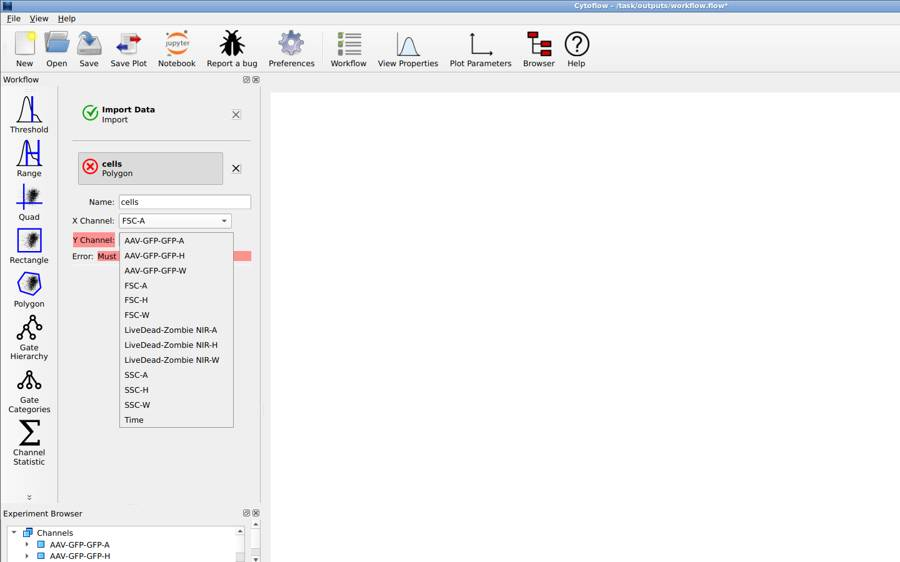
cd /task; cu click 217 600; sleep 1; cu click 652 78; sleep 6; cu screenshot /tmp/screen.png
{
"file_path": "/tmp/screen.png"
}/tmp/screen.png
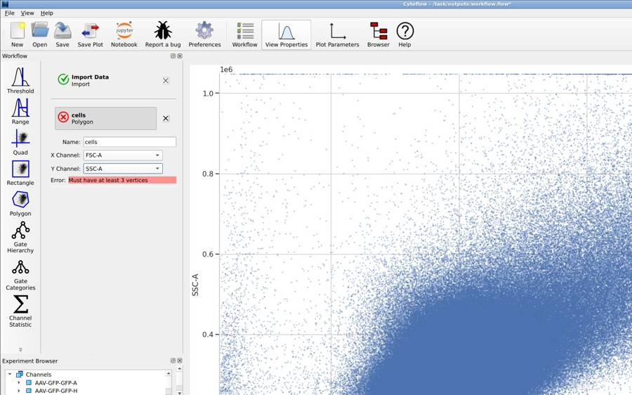
which xdotool wmctrl xwininfo xprop 2>&1; echo $DISPLAY; cu --help 2>&1 | head -30
/usr/bin/xdotool
/usr/bin/xwininfo
/usr/bin/xprop
:1
# Computer-use helper: the agent's only way to act on the screen.
# cu screenshot [path] -> PNG of the screen (default /tmp/screen.png); prints path
# cu click X Y [left|right|double]
# cu move X Y | cu drag X1 Y1 X2 Y2 | cu scroll X Y up|down [N]
# cu type "text" (keystrokes) | cu paste "text" (clipboard) | cu key KEYS (e.g. ctrl+s, Return)
# cu cursor -> current mouse position
export DISPLAY=${DISPLAY:-:1}
cmd=$1; shiftxwininfo -root -tree 2>/dev/null | grep -i -E "cytoflow|Dialog" | head
0xe00034 "cytoflow": ("cytoflow" "cytoflow") 183x313+191+372 +191+372
0xe0002f "cytoflow": ("cytoflow" "cytoflow") 183x313+191+341 +191+341
0xe00025 "cytoflow": ("cytoflow" "cytoflow") 304x168+7+41 +7+41
0xe00008 "cytoflow": () 1x1+0+0 +0+0
0xe00004 "Qt Selection Owner for cytoflow": () 3x3+0+0 +0+0
0xe00006 "Cytoflow - /task/outputs/workflow.flow*": ("cytoflow" "cytoflow") 2082x1171+1+20 +1+20cd /task; cu click 700 9 double; sleep 2; xwininfo -root -tree 2>/dev/null | grep "Cytoflow -"; cu screenshot /tmp/screen.png
{
"file_path": "/tmp/screen.png"
} 0xe00006 "Cytoflow - /task/outputs/workflow.flow*": ("cytoflow" "cytoflow") 1440x881+0+19 +0+19
/tmp/screen.png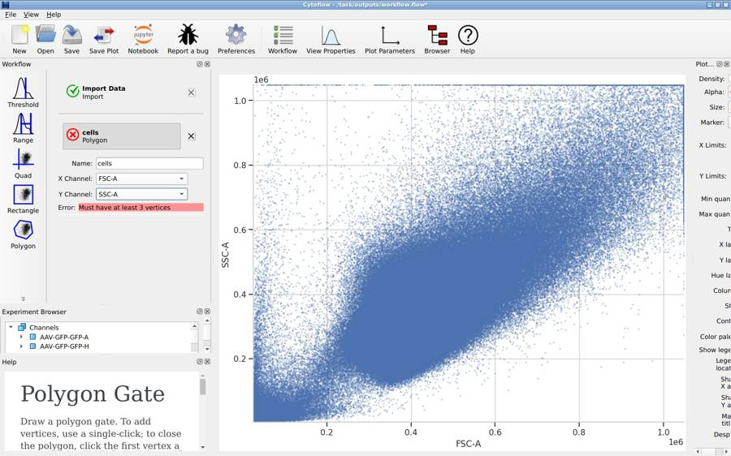
cd /task; cu click 408 713; sleep 1; cu click 651 78; sleep 2; cu screenshot /tmp/screen.png
{
"file_path": "/tmp/screen.png"
}/tmp/screen.png
cd /task; cu click 1393 460; sleep 3; cu screenshot /tmp/screen.png
{
"file_path": "/tmp/screen.png"
}/tmp/screen.png
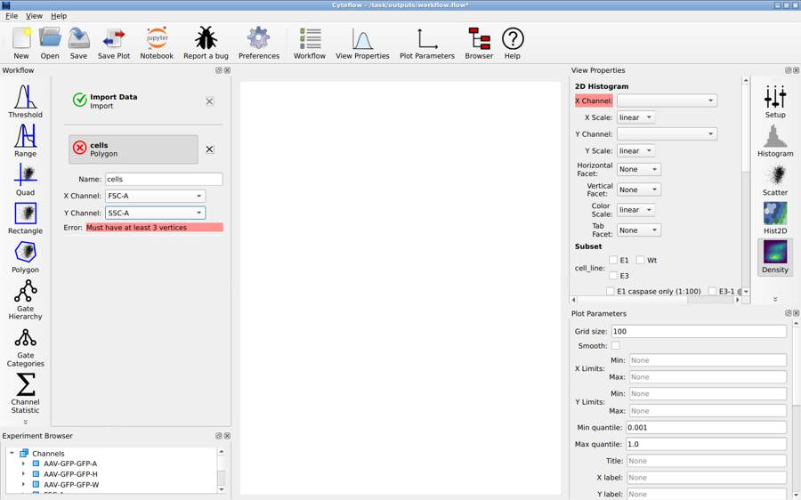
cd /task; cu click 1198 181; sleep 1; cu click 1150 253; sleep 1; cu click 1198 241; sleep 1; cu screenshot /tmp/s1.png; cu click 1150 457; sleep 5; cu screenshot /tmp/screen.png
{
"file_path": "/tmp/screen.png"
}/tmp/s1.png /tmp/screen.png
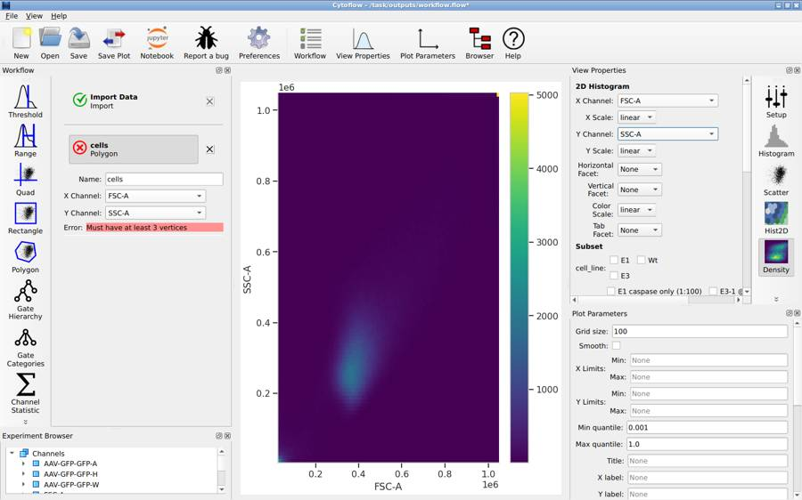
cd /task; cu click 1142 378; sleep 1; cu screenshot /tmp/s1.png
{
"file_path": "/tmp/s1.png"
}/tmp/s1.png
cd /task; cu click 1127 402; sleep 1; cu click 1147 305; sleep 1; cu screenshot /tmp/s1.png
{
"file_path": "/tmp/s1.png"
}/tmp/s1.png
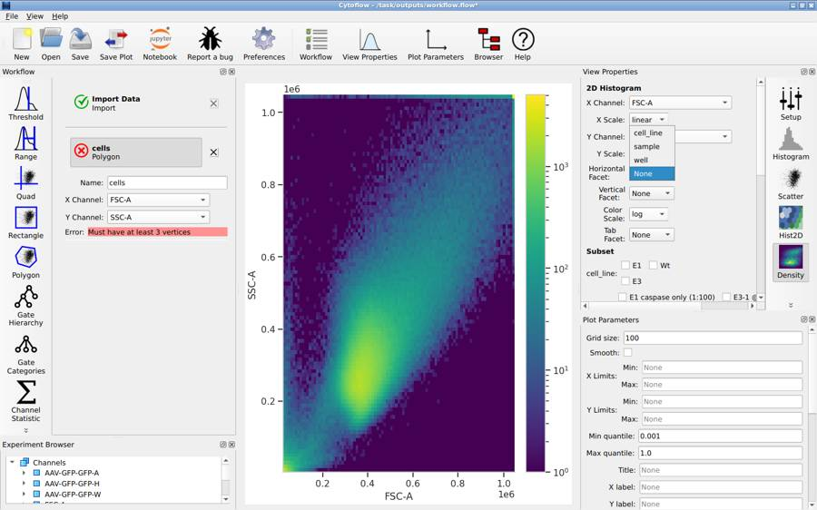
cd /task; cu click 1140 235; sleep 6; cu screenshot /tmp/s1.png
{
"file_path": "/tmp/s1.png"
}/tmp/s1.png
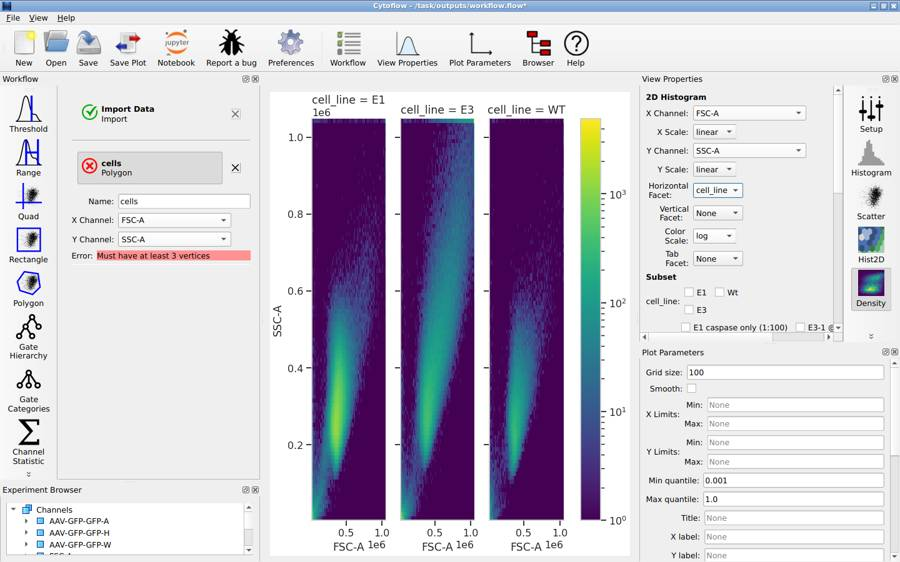
cd /task; cu click 1393 185; sleep 8; cu screenshot /tmp/s1.png
{
"file_path": "/tmp/s1.png"
}/tmp/s1.png
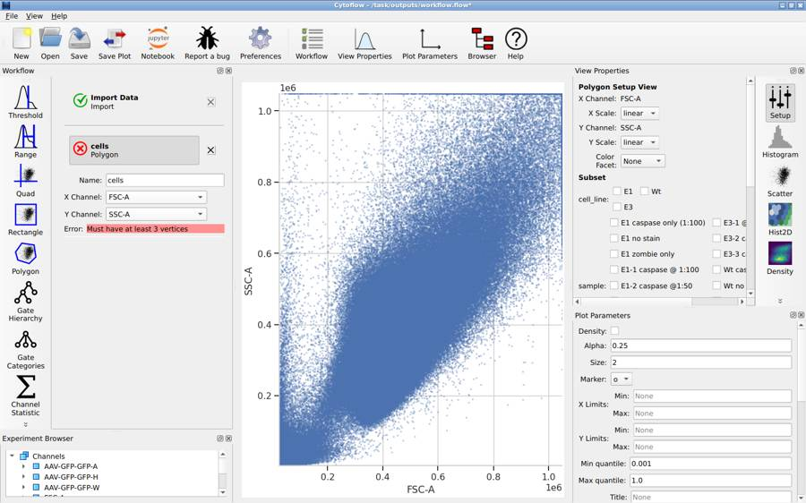
cd /task; for p in "585 810" "585 632" "708 358" "842 186" "990 186" "990 581" "758 797"; do cu click $p; sleep 0.7; done; cu screenshot /tmp/s1.png
{
"file_path": "/tmp/s1.png"
}/tmp/s1.png
cd /task; cu click 585 810; sleep 6; cu screenshot /tmp/s1.png
{
"file_path": "/tmp/s1.png"
}/tmp/s1.png
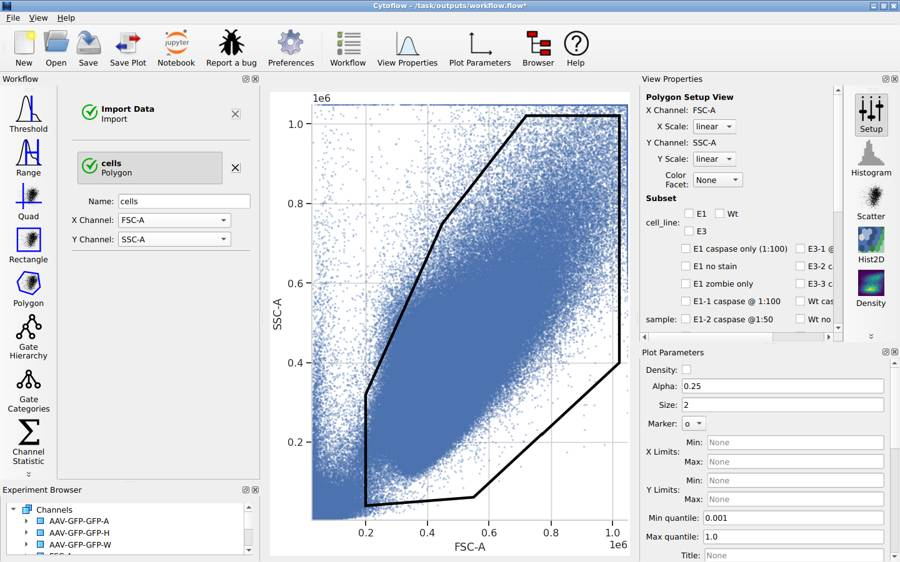
cd /task; cu key ctrl+s; sleep 2; grep -n -B3 -A30 "polygon" outputs/workflow.flow | head -70
600- - 15 601- - 16 602- - 17 603: current_view: &id002 !polygon-view;3 604- current_plot: null 605- huefacet: '' 606- huescale: linear 607: op: &id001 !polygon;1 608- name: cells 609- vertices: 610- - !!python/tuple 611- - 199539.01257320016 612- - 40564.55912778409 613- - !!python/tuple 614- - 199539.01257320016 615- - 319869.36888274096 616- - !!python/tuple 617- - 448862.1057894427 618- - 749443.4330087858 619- - !!python/tuple 620- - 721427.182271606 621- - 1020581.4354609662 622- - !!python/tuple 623- - 1021460.0571589489 624- - 1020581.4354609662 625- - !!python/tuple 626- - 1021460.0571589489 627- - 399904.0804499508 628- - !!python/tuple 629- - 550281.6691316431 630- - 61798.25811500302 631- xchannel: FSC-A 632- xscale: linear 633- ychannel: SSC-A 634- yscale: linear 635: plot_params: !polygon-params;1 636- alpha: 0.25 637- col_wrap: null 638- density: false 639- despine: true 640- gridsize: 50 641- huelabel: '' 642- legend: true 643- marker: o 644- max_quantile: 1.0 645- min_quantile: 0.001 646- s: 2 647- sharex: true 648- sharey: true 649- smoothed: false 650- smoothed_sigma: 1.0 651- sns_context: notebook 652- sns_style: whitegrid 653- title: '' 654- xlabel: '' 655- xlim: &id003 !!python/tuple 656- - null 657- - null 658- ylabel: '' 659- ylim: &id004 !!python/tuple 660- - null 661- - null 662- subset_list: 663- - !category-subset;1 664- name: cell_line 665- selected: []
cd /task; cu click 46 460; sleep 2; cu screenshot /tmp/s1.png
{
"file_path": "/tmp/s1.png"
}/tmp/s1.png
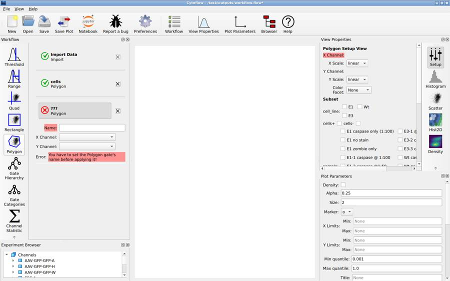
cd /task; cu click 295 409; cu type "singlets"; cu key Tab; sleep 0.5; cu click 280 439; sleep 1; cu click 220 511; sleep 1; cu click 280 469; sleep 1; cu screenshot /tmp/s0.png; cu click 220 565; sleep 2; cu click 1086 395; sleep 8; cu screenshot /tmp/s1.png
{
"file_path": "/tmp/s1.png"
}/tmp/s0.png /tmp/s1.png
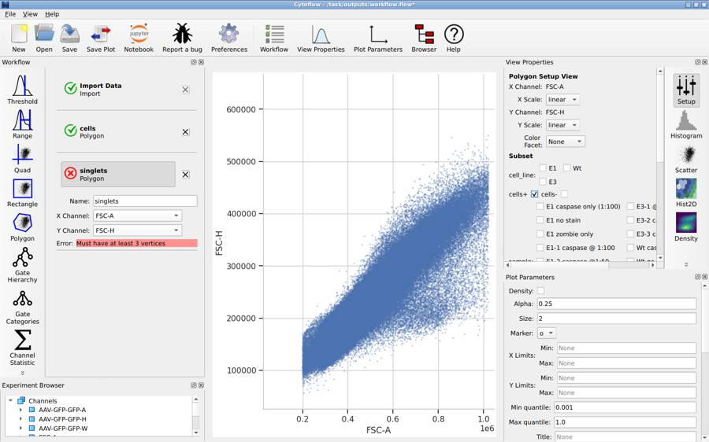
cd /task; cu click 1098 592; sleep 8; cu screenshot /tmp/s1.png
{
"file_path": "/tmp/s1.png"
}/tmp/s1.png
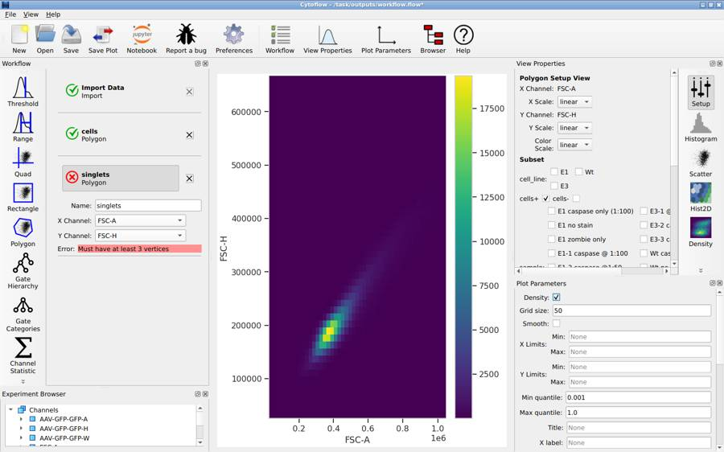
cd /task; cu click 1142 288; sleep 1; cu click 1127 313; sleep 8; cu screenshot /tmp/s1.png
{
"file_path": "/tmp/s1.png"
}/tmp/s1.png
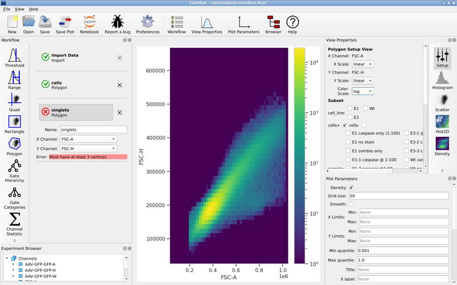
cd /task; for p in "594 791" "594 717" "901 199" "901 390"; do cu click $p; sleep 0.7; done; cu click 594 791; sleep 8; cu screenshot /tmp/s1.png
{
"file_path": "/tmp/s1.png"
}/tmp/s1.png
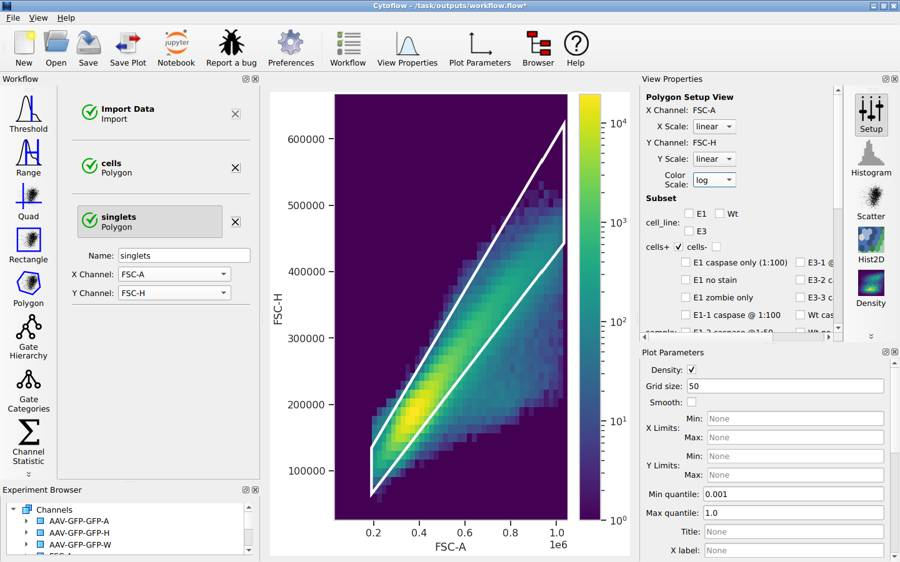
cd /task; cu key ctrl+s; sleep 2; cu click 46 250; sleep 2; cu screenshot /tmp/s1.png
{
"file_path": "/tmp/s1.png"
}/tmp/s1.png
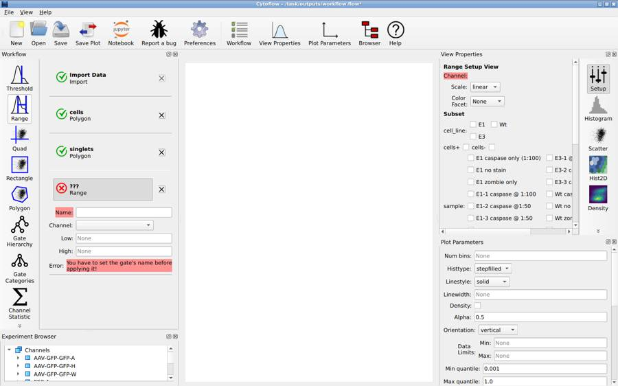
cd /task; cu click 288 495; cu type "live"; cu key Tab; sleep 0.5; cu click 268 525; sleep 1; cu screenshot /tmp/s0.png; cu click 240 669; sleep 2; cu click 1130 203; sleep 1; cu screenshot /tmp/s1.png
{
"file_path": "/tmp/s1.png"
}/tmp/s0.png /tmp/s1.png
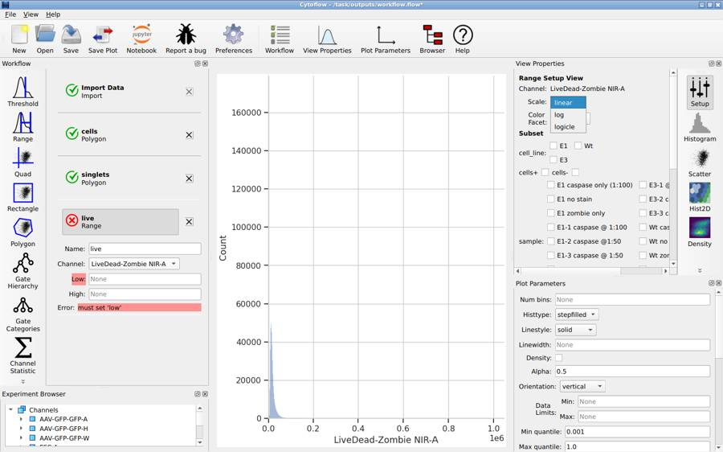
cd /task; cu click 1124 253; sleep 3; cu click 1130 237; sleep 1; cu screenshot /tmp/s1.png
{
"file_path": "/tmp/s1.png"
}/tmp/s1.png
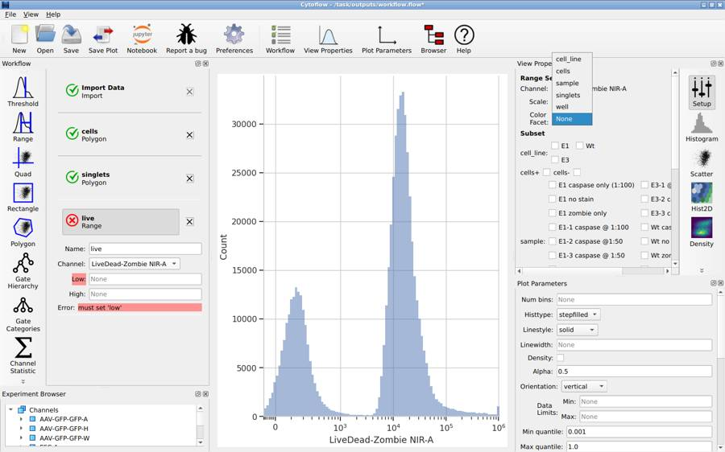
cd /task; cu click 1127 165; sleep 8; cu screenshot /tmp/s1.png
{
"file_path": "/tmp/s1.png"
}/tmp/s1.png
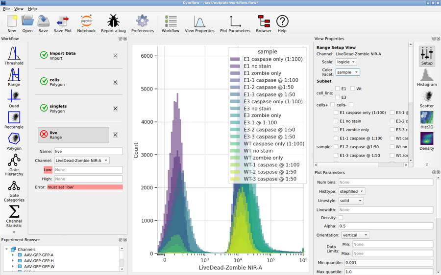
cd /task; cu click 1135 237; sleep 1; cu screenshot /tmp/s0.png; cu click 1129 117; sleep 3; cu click 1086 343; sleep 8; cu screenshot /tmp/s1.png
{
"file_path": "/tmp/s1.png"
}/tmp/s0.png /tmp/s1.png
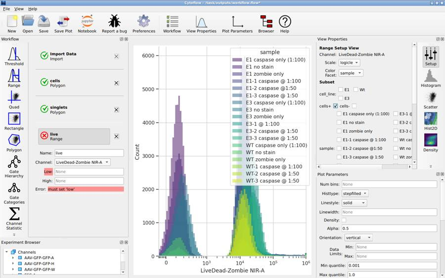
cd /task; cu click 288 555; cu type "-100000"; cu key Tab; sleep 0.5; cu click 288 585; cu type "60000"; cu key Tab; sleep 8; cu screenshot /tmp/s1.png
{
"file_path": "/tmp/s1.png"
}/tmp/s1.png
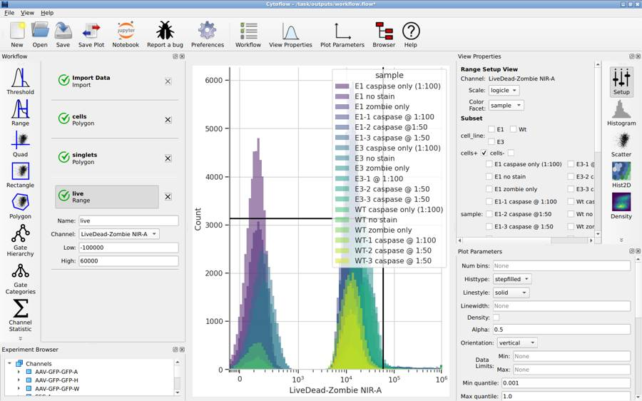
cd /task; cu key ctrl+s; sleep 1; cu click 46 180; sleep 2; cu screenshot /tmp/s1.png
{
"file_path": "/tmp/s1.png"
}/tmp/s1.png
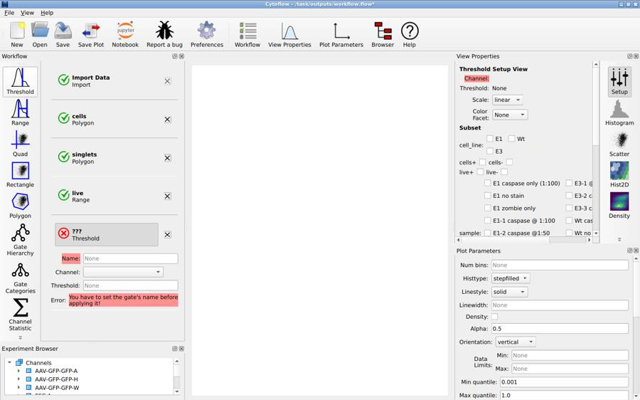
cd /task; cu click 293 582; cu type "caspase_pos"; cu key Tab; sleep 0.5; cu click 276 612; sleep 1; cu screenshot /tmp/s0.png; cu click 240 612; sleep 2; cu click 1140 225; sleep 1; cu screenshot /tmp/s1.png
{
"file_path": "/tmp/s1.png"
}/tmp/s0.png /tmp/s1.png
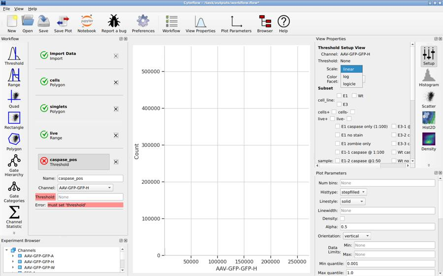
cd /task; cu click 1135 273; sleep 3; cu click 276 612; sleep 1; cu screenshot /tmp/s1.png
{
"file_path": "/tmp/s1.png"
}/tmp/s1.png
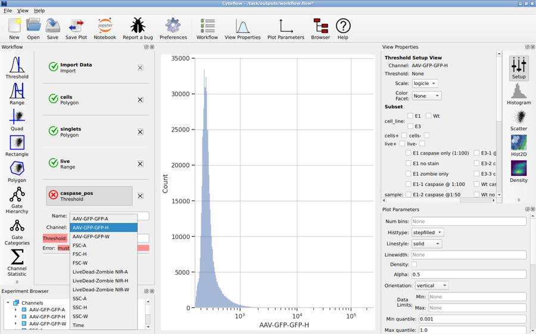
cd /task; cu click 243 589; sleep 5; cu click 1140 259; sleep 1; cu screenshot /tmp/s1.png
{
"file_path": "/tmp/s1.png"
}/tmp/s1.png
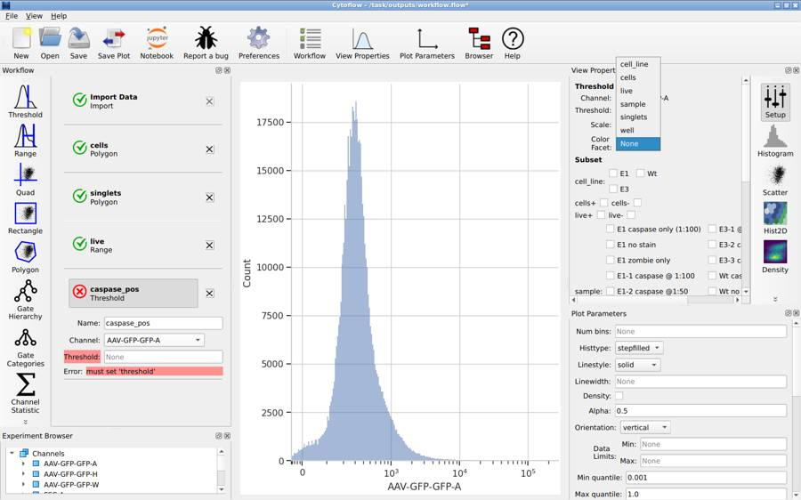
cd /task; cu click 1138 187; sleep 8; cu screenshot /tmp/s1.png
{
"file_path": "/tmp/s1.png"
}/tmp/s1.png
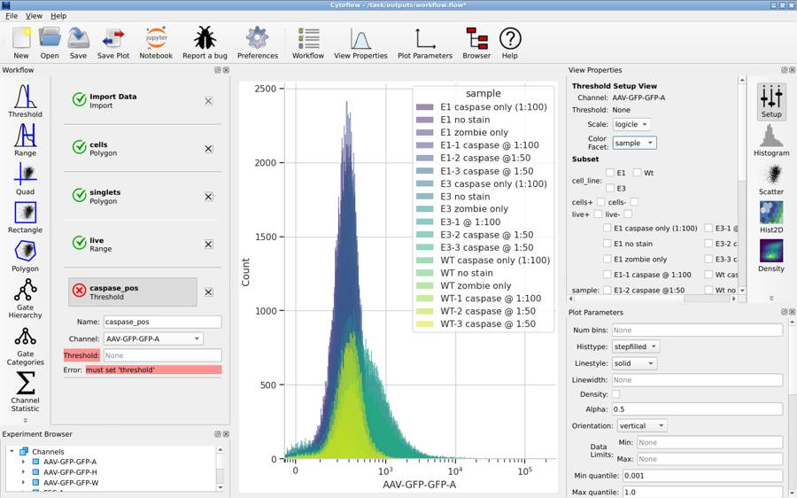
cd /task; cu click 293 642; cu type "2000"; cu key Tab; sleep 6; cu key ctrl+s; sleep 1; cu click 1393 255; sleep 3; cu screenshot /tmp/s1.png
{
"file_path": "/tmp/s1.png"
}/tmp/s1.png
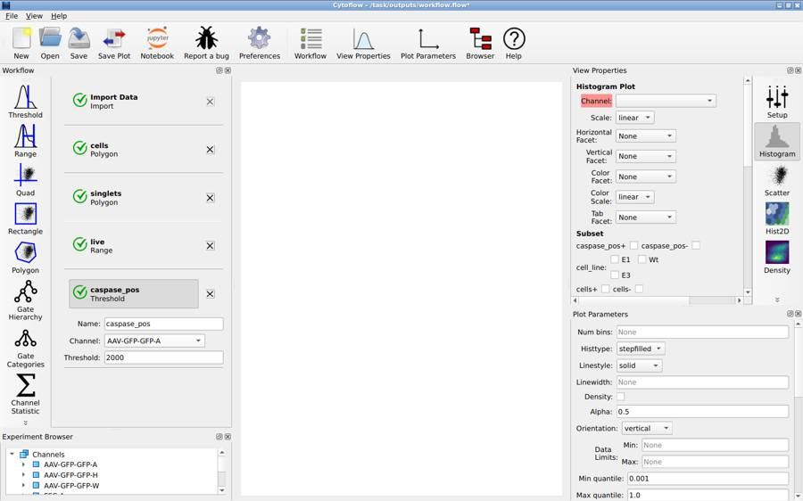
thinking
All four gates are saved in the workflow, and I'm now comparing the control wells with a faceted histogram to tune the live and caspase cutoffs.
cd /task; cu drag 1230 551 1230 840; sleep 2; cu screenshot /tmp/s1.png
{
"file_path": "/tmp/s1.png"
}/tmp/s1.png
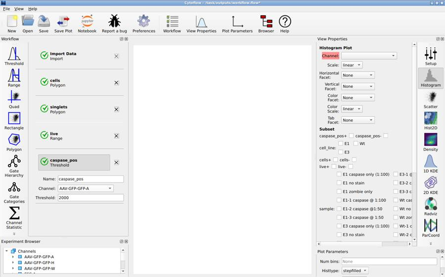
cd /task; cu click 1190 181; sleep 1; cu click 1170 325; sleep 2; cu click 1136 212; sleep 1; cu screenshot /tmp/s0.png
{
"file_path": "/tmp/s0.png"
}/tmp/s0.png
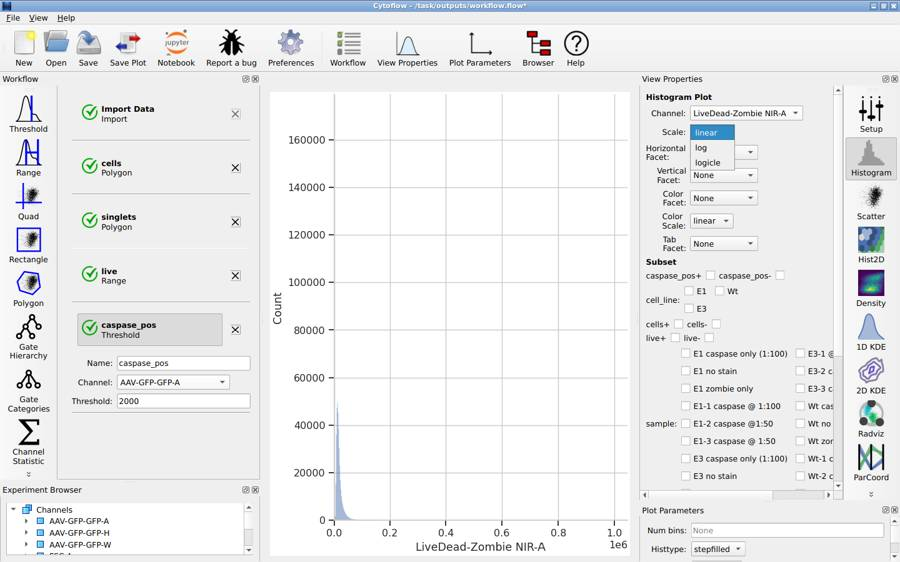
cd /task; cu click 1132 260; sleep 3; cu click 1157 245; sleep 1; cu screenshot /tmp/s0.png
{
"file_path": "/tmp/s0.png"
}/tmp/s0.png
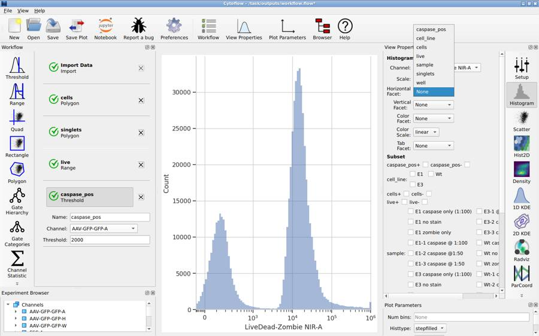
cd /task; cu key Escape; sleep 0.5; cu click 1157 281; sleep 1; cu click 1137 209; sleep 3; cu click 1151 466; sleep 3; cu click 1086 519; sleep 8; cu screenshot /tmp/s0.png
{
"file_path": "/tmp/s0.png"
}/tmp/s0.png
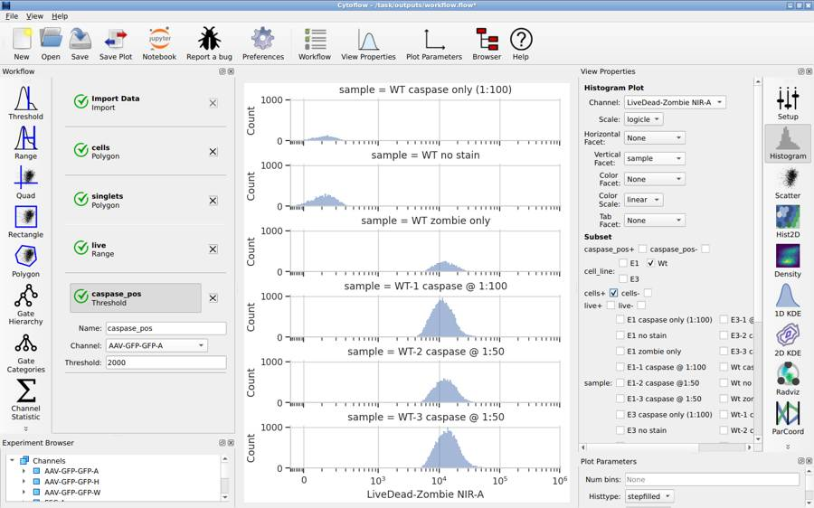
cd /task; cu click 1151 466; sleep 1; cu click 1102 466; sleep 8; cu screenshot /tmp/s0.png; cu click 1102 466; sleep 1; cu click 1102 494; sleep 8; cu screenshot /tmp/s1.png
{
"file_path": "/tmp/s0.png"
}{
"file_path": "/tmp/s1.png"
}/tmp/s0.png /tmp/s1.png
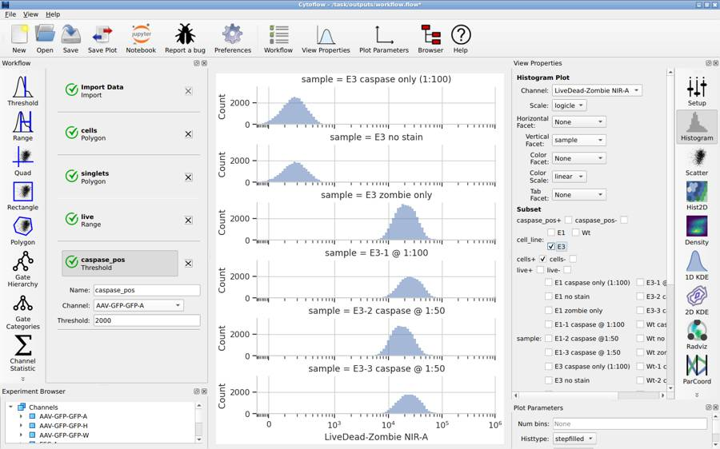
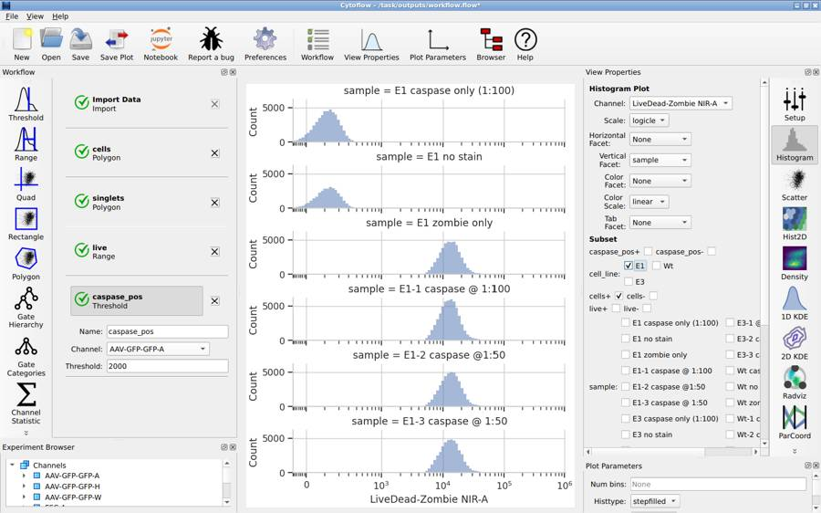
thinking
Zombie staining lines up with the plate labels with no mislabels on that channel, but E3 runs a bit brighter, so I'm loosening the live cutoff. Next I'm checking the caspase (BL1) channel well by well against the controls.
cd /task; cu click 1190 181; sleep 1; cu screenshot /tmp/s0.png
{
"file_path": "/tmp/s0.png"
}/tmp/s0.png
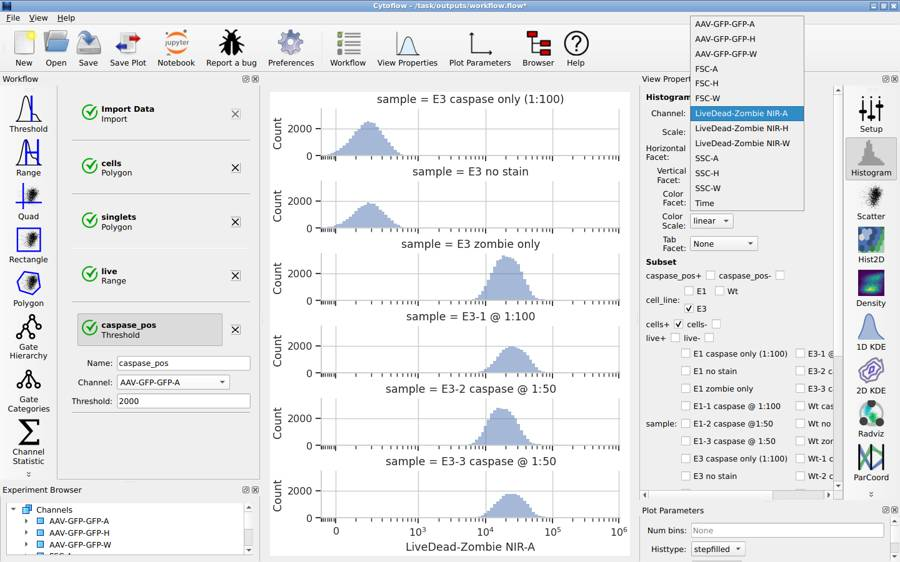
cd /task; cu click 1160 38; sleep 8; cu screenshot /tmp/s0.png
{
"file_path": "/tmp/s0.png"
}/tmp/s0.png
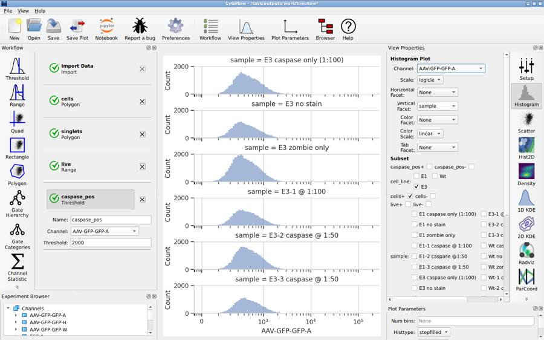
cd /task; cu click 1102 494; sleep 1; cu click 1102 466; sleep 8; cu screenshot /tmp/s0.png; cu click 1102 466; sleep 1; cu click 1151 466; sleep 8; cu screenshot /tmp/s1.png
{
"file_path": "/tmp/s0.png"
}{
"file_path": "/tmp/s1.png"
}/tmp/s0.png /tmp/s1.png
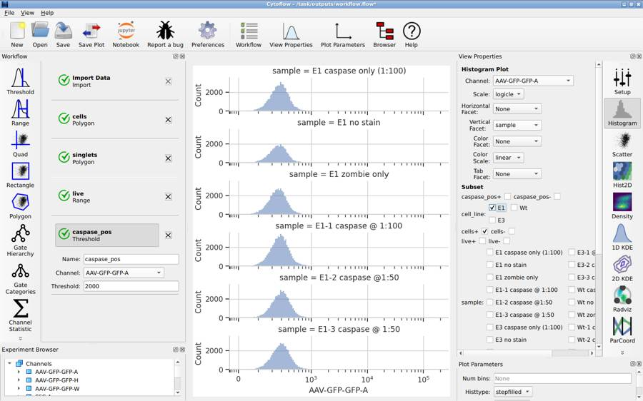
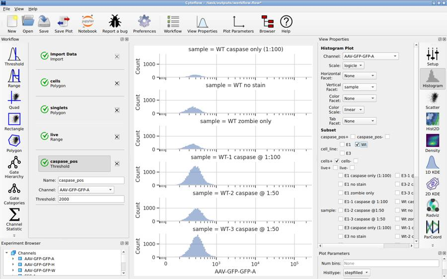
cd /task; cu click 1393 460; sleep 6; cu screenshot /tmp/s0.png
{
"file_path": "/tmp/s0.png"
}/tmp/s0.png
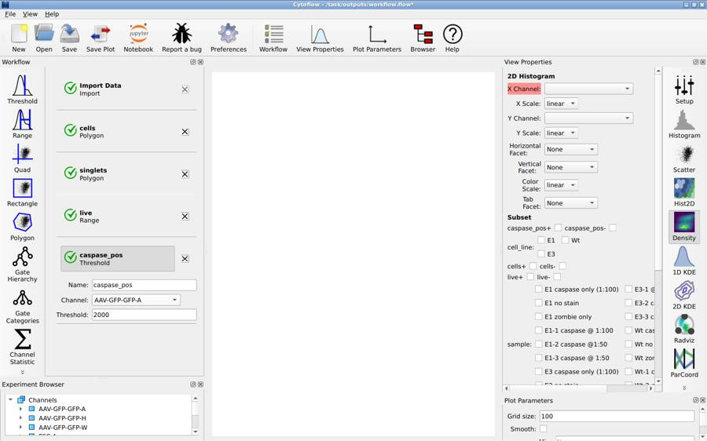
thinking
The BL1 caspase antibody histograms look identical in stained and unstained wells for all three lines. I'm now plotting Zombie against BL1 density to look for a distinct dead/positive cluster before fixing the final cutoffs.
cd /task; cu click 1198 181; sleep 1; cu click 1170 325; sleep 1; cu click 1198 241; sleep 1; cu click 1170 241; sleep 2; cu click 1142 212; sleep 1; cu click 1135 259; sleep 2; cu click 1142 272; sleep 1; cu click 1135 319; sleep 2; cu click 1142 378; sleep 1; cu click 1127 402; sleep 2; cu click 1160 305; sleep 1; cu click 1140 161; sleep 2; cu click 1086 543; sleep 10; cu screenshot /tmp/s0.png
{
"file_path": "/tmp/s0.png"
}/tmp/s0.png
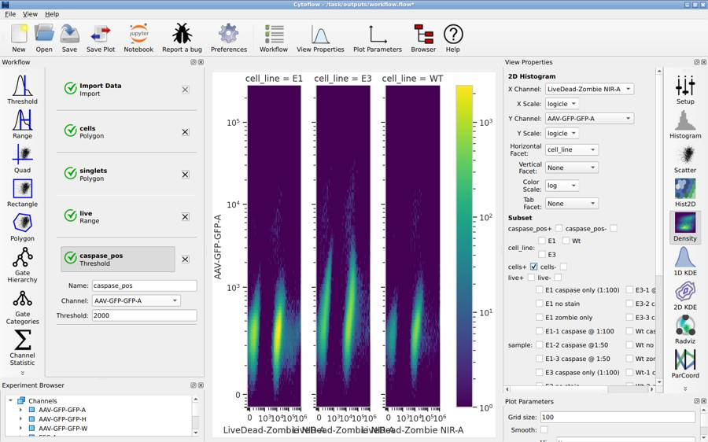
cd /task; cu click 1160 305; sleep 1; cu screenshot /tmp/s1.png
{
"file_path": "/tmp/s1.png"
}/tmp/s1.png
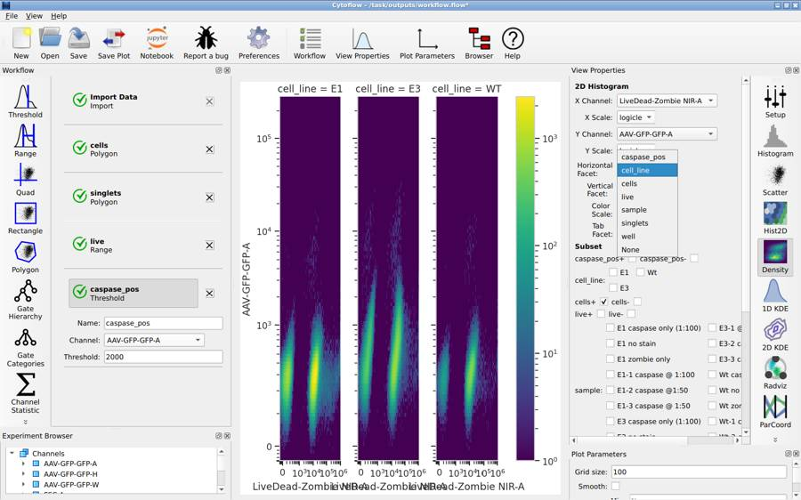
cd /task; cu click 1134 449; sleep 10; cu screenshot /tmp/s1.png
{
"file_path": "/tmp/s1.png"
}/tmp/s1.png
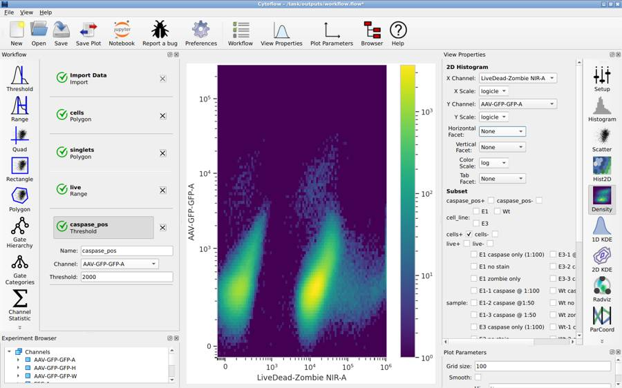
cd /task; cu click 240 440; sleep 2; cu screenshot /tmp/s1.png
{
"file_path": "/tmp/s1.png"
}/tmp/s1.png
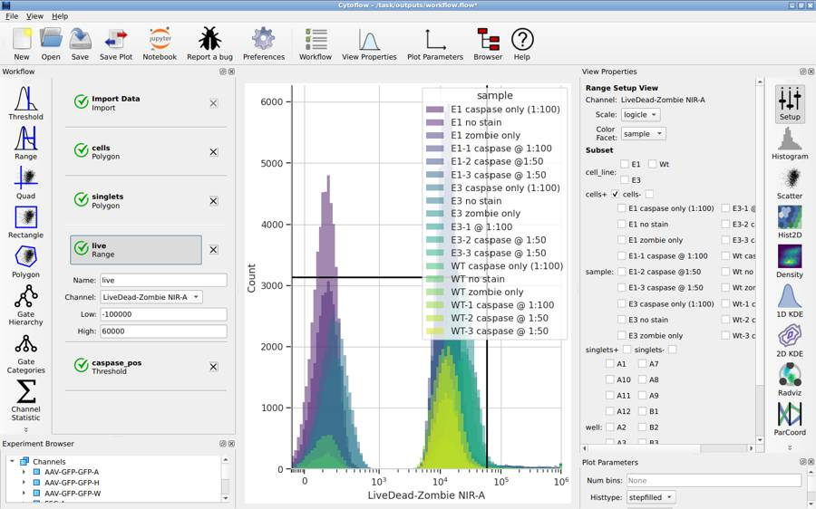
cd /task; cu click 288 585; cu key ctrl+a; cu type "100000"; cu key Tab; sleep 8; cu click 240 647; sleep 3; cu click 46 700; sleep 3; cu screenshot /tmp/s1.png
{
"file_path": "/tmp/s1.png"
}/tmp/s1.png
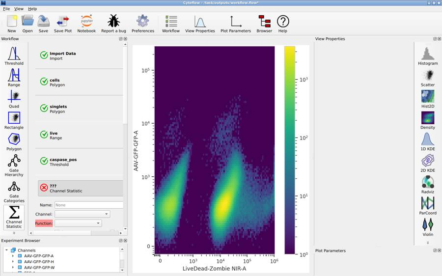
cd /task; cu click 408 785; sleep 1; cu scroll 250 600 down 10; sleep 1; cu screenshot /tmp/s1.png
{
"file_path": "/tmp/s1.png"
}/tmp/s1.png
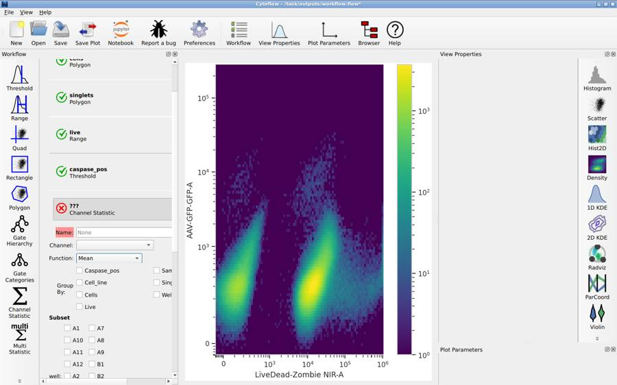
cd /task; cu drag 421 510 640 510; sleep 2; cu screenshot /tmp/s1.png
{
"file_path": "/tmp/s1.png"
}/tmp/s1.png
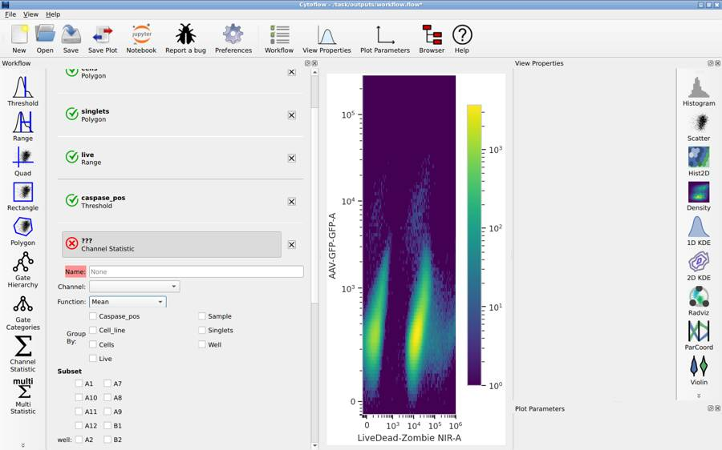
cd /task; cu click 390 543; cu type "counts"; cu key Tab; sleep 0.5; cu click 255 604; sleep 1; cu screenshot /tmp/s1.png
{
"file_path": "/tmp/s1.png"
}/tmp/s1.png
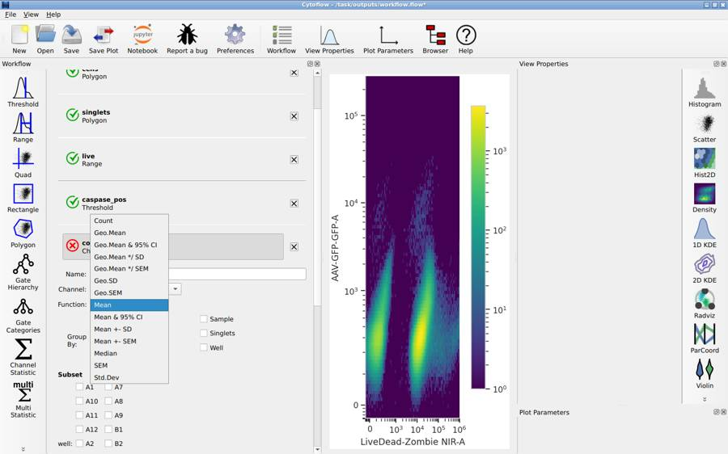
cd /task; cu click 205 437; sleep 1; cu click 268 573; sleep 1; cu screenshot /tmp/s0.png; cu click 230 645; sleep 1; for p in "185 632" "185 689" "185 717" "403 660" "403 689"; do cu click $p; sleep 1; done; sleep 5; cu screenshot /tmp/s1.png
{
"file_path": "/tmp/s1.png"
}/tmp/s0.png /tmp/s1.png
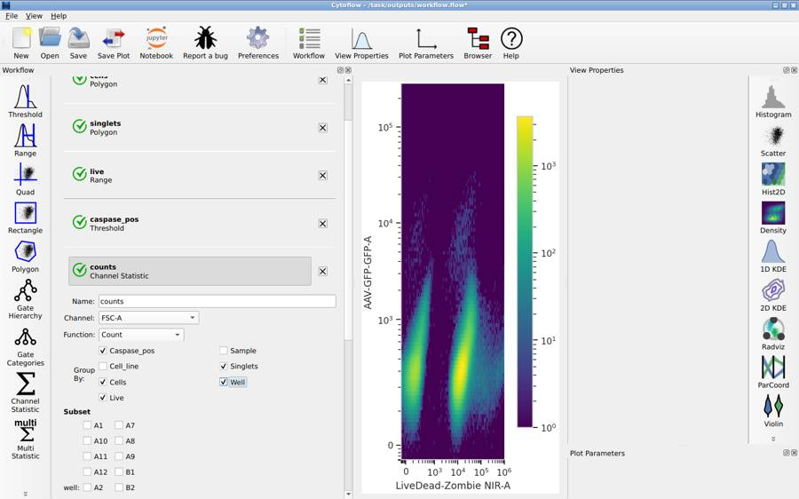
cd /task; cu key ctrl+s; sleep 1; cu scroll 1393 600 down 10; sleep 1; cu screenshot /tmp/s1.png
{
"file_path": "/tmp/s1.png"
}/tmp/s1.png
cd /task; cu click 1393 791; sleep 1; cu screenshot /tmp/s1.png
{
"file_path": "/tmp/s1.png"
}/tmp/s1.png
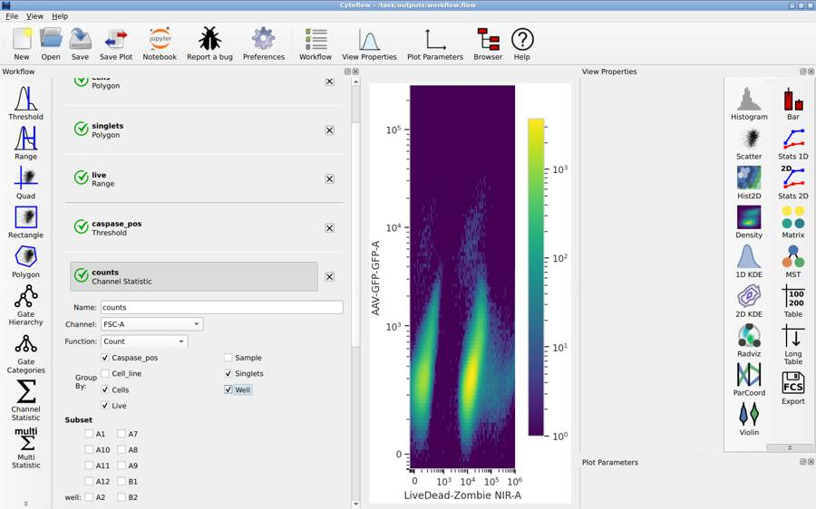
cd /task; cu click 1399 610; sleep 3; cu screenshot /tmp/s1.png
{
"file_path": "/tmp/s1.png"
}/tmp/s1.png
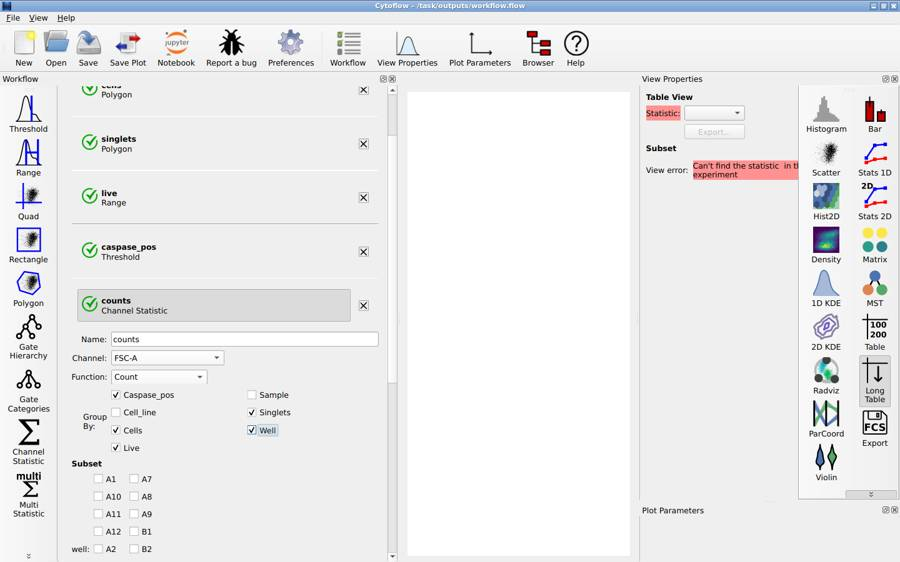
cd /task; cu click 1142 181; sleep 1; cu screenshot /tmp/s1.png
{
"file_path": "/tmp/s1.png"
}/tmp/s1.png
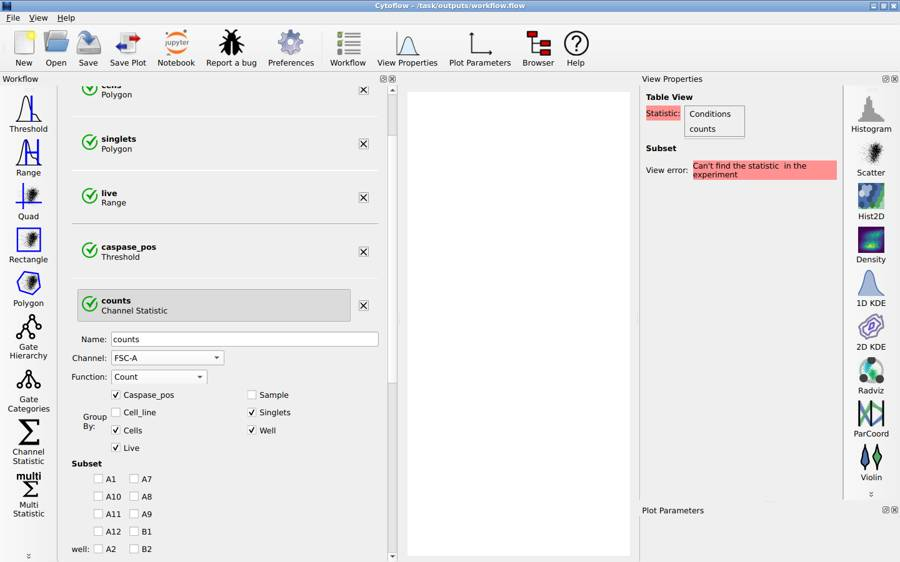
cd /task; cu click 1124 207; sleep 4; cu screenshot /tmp/s1.png
{
"file_path": "/tmp/s1.png"
}/tmp/s1.png
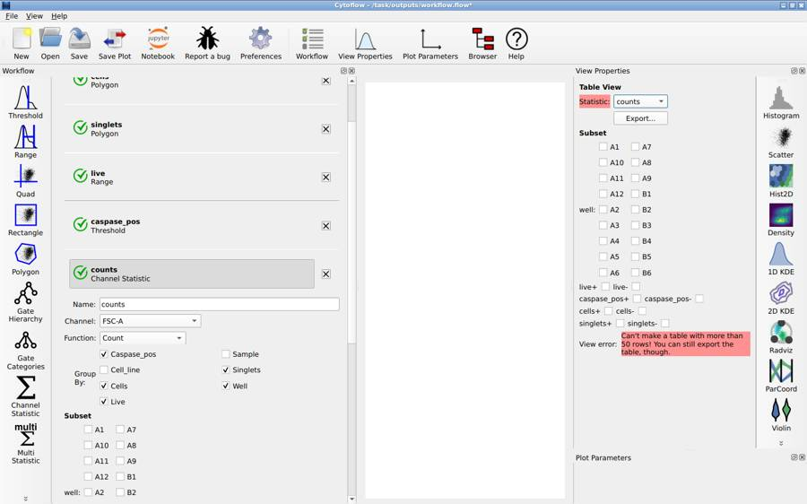
cd /task; mkdir -p outputs/cytoflow_exports; chmod 777 outputs/cytoflow_exports; cu click 1142 211; sleep 2; cu screenshot /tmp/s1.png
{
"file_path": "/tmp/s1.png"
}/tmp/s1.png
cd /task; cu click 706 567; cu paste "/task/outputs/cytoflow_exports/counts_thr2000.csv"; sleep 0.5; cu key Return; sleep 3; ls -la outputs/cytoflow_exports; head -20 outputs/cytoflow_exports/counts_thr2000.csv; wc -l outputs/cytoflow_exports/counts_thr2000.csv
total 12 drwxrwsrwx 2 root task 4096 Nov 10 19:02 . drwxrwsrwx 3 agent task 4096 Nov 10 19:02 .. -rw-rw-r-- 1 cfapp task 3674 Nov 10 19:02 counts_thr2000.csv caspase_pos,cells,live,singlets,well,FSC-A 0,0,0,0,A10,385.0 0,0,0,0,A11,378.0 0,0,0,0,A12,538.0 0,0,0,0,A3,29.0 0,0,0,0,A4,77.0 0,0,0,0,A5,22.0 0,0,0,0,A6,99.0 0,0,0,0,A9,352.0 0,0,0,0,B3,669.0 0,0,0,0,B4,368.0 0,0,0,0,B5,375.0 0,0,0,0,B6,240.0 0,0,0,1,A10,72.0 0,0,0,1,A11,37.0 0,0,0,1,A12,88.0 0,0,0,1,A3,2.0 0,0,0,1,A4,13.0 0,0,0,1,A5,9.0 0,0,0,1,A6,11.0 218 outputs/cytoflow_exports/counts_thr2000.csv
mkdir -p /task/work && cat > /task/work/tab.py <<'EOF'
import pandas as pd, sys
f=sys.argv[1]
d=pd.read_csv(f)
vc=[c for c in d.columns if c not in('caspase_pos','cells','live','singlets','well')][0]
d=d.rename(columns={vc:'n'})
lay=pd.read_csv('/task/inputs/plate_layout.csv')
rows=[]
for w,g in d.groupby('well'):
a=g.n.sum()
c=g[g.cells==1].n.sum()
s=g[(g.cells==1)&(g.singlets==1)].n.sum()
l=g[(g.cells==1)&(g.singlets==1)&(g.live==1)].n.sum()
p=g[(g.cells==1)&(g.singlets==1)&(g.live==1)&(g.caspase_pos==1)].n.sum()
rows.append(dict(well=w,all=int(a),cells=int(c),singlets=int(s),live=int(l),pos=int(p)))
r=pd.DataFrame(rows).merge(lay[['well','sample']],on='well')
r['key']=r.well.map(lambda w:(w[0],int(w[1:])))
r=r.sort_values('key').drop(columns='key')
r['%cells']=100*r.cells/r['all'];r['%sing']=100*r.singlets/r.cells;r['%live']=100*r.live/r.singlets;r['%pos']=100*r.pos/r.live
pd.set_option('display.width',200)
print(r.round(2).to_string(index=False)); print(r['all'].sum())
EOF
python3 /task/work/tab.py /task/outputs/cytoflow_exports/counts_thr2000.csvwell all cells singlets live pos sample %cells %sing %live %pos A1 6969 6368 6125 6125 3 WT no stain 91.38 96.18 100.00 0.05 A2 3149 2535 2440 2440 18 WT caspase only (1:100) 80.50 96.25 100.00 0.74 A3 5742 5156 4977 4923 0 WT zombie only 89.79 96.53 98.92 0.00 A4 20776 19673 18680 18505 75 WT-1 caspase @ 1:100 94.69 94.95 99.06 0.41 A5 13119 12561 11988 11909 64 WT-2 caspase @ 1:50 95.75 95.44 99.34 0.54 A6 21946 20974 20042 19769 121 WT-3 caspase @ 1:50 95.57 95.56 98.64 0.61 A7 33911 32366 31204 31204 0 E1 no stain 95.44 96.41 100.00 0.00 A8 52749 50753 48444 48444 71 E1 caspase only (1:100) 96.22 95.45 100.00 0.15 A9 49297 47203 45086 44342 4 E1 zombie only 95.75 95.52 98.35 0.01 A10 58936 56534 53827 52953 85 E1-1 caspase @ 1:100 95.92 95.21 98.38 0.16 A11 51193 48838 46502 45746 92 E1-2 caspase @1:50 95.40 95.22 98.37 0.20 A12 51047 48200 46115 45123 127 E1-3 caspase @ 1:50 94.42 95.67 97.85 0.28 B1 26935 23091 21160 21160 120 E3 no stain 85.73 91.64 100.00 0.57 B2 36048 31390 28863 28863 522 E3 caspase only (1:100) 87.08 91.95 100.00 1.81 B3 46022 40105 36753 36270 218 E3 zombie only 87.14 91.64 98.69 0.60 B4 27503 23940 22043 21699 408 E3-1 @ 1:100 87.05 92.08 98.44 1.88 B5 37596 33436 30854 30415 495 E3-2 caspase @ 1:50 88.93 92.28 98.58 1.63 B6 24797 21900 20297 19960 324 E3-3 caspase @ 1:50 88.32 92.68 98.34 1.62 567735
cd /task; cu click 1393 185; sleep 3; cu click 1190 181; sleep 1; cu click 1150 469; sleep 2; cu click 1157 281; sleep 1; cu click 1137 209; sleep 3; cu screenshot /tmp/s1.png
{
"file_path": "/tmp/s1.png"
}/tmp/s1.png
thinking
Antibody-stained wells show only about 0.2–1% more BL1-bright events than the no-antibody controls. I'm now checking event rate over time per well for clogs or dry wells.
cd /task; cu drag 640 510 421 510; sleep 2; cu click 1102 466; sleep 8; cu screenshot /tmp/s0.png; cu click 1102 466; sleep 1; cu click 1102 494; sleep 8; cu screenshot /tmp/s1.png; cu click 1102 494; sleep 1; cu click 1151 466; sleep 8; cu screenshot /tmp/s2.png
{
"file_path": "/tmp/s0.png"
}{
"file_path": "/tmp/s1.png"
}{
"file_path": "/tmp/s2.png"
}/tmp/s0.png /tmp/s1.png /tmp/s2.png
cd /task; cu click 1393 255; sleep 3; cu screenshot /tmp/s1.png
{
"file_path": "/tmp/s1.png"
}/tmp/s1.png
cd /task; cu click 1222 181; sleep 1; cu click 1190 181; sleep 1; cu click 1222 241; sleep 1; cu click 1190 313; sleep 2; cu click 1165 212; sleep 1; cu click 1160 259; sleep 2; cu click 1185 408; sleep 1; cu click 1160 336; sleep 2; cu click 1102 584; sleep 2; cu click 1086 609; sleep 10; cu screenshot /tmp/s1.png
{
"file_path": "/tmp/s1.png"
}/tmp/s1.png
thinking
Antibody-stained E3 wells show a small BL1-bright cluster (~10⁴) that the controls lack, which looks like a real cleaved-caspase-3⁺ population. I'm checking E1 and WT the same way to set the positive threshold.
cd /task; cu click 1102 584; sleep 1; cu click 1102 556; sleep 10; cu screenshot /tmp/s0.png; cu click 1102 556; sleep 1; cu click 1151 556; sleep 10; cu screenshot /tmp/s1.png
{
"file_path": "/tmp/s0.png"
}{
"file_path": "/tmp/s1.png"
}/tmp/s0.png /tmp/s1.png
cd /task; cu click 1222 241; sleep 1; cu click 1190 313; sleep 2; cu click 1165 272; sleep 1; cu click 1160 319; sleep 10; cu screenshot /tmp/s1.png
{
"file_path": "/tmp/s1.png"
}/tmp/s1.png
thinking
Caspase-bright cells fall inside the live population in every line, so the live gate keeps them. I'm raising the caspase threshold to cut E3's extra autofluorescence, then re-exporting counts to compare.
cd /task; cu click 240 403; sleep 6; cu screenshot /tmp/s1.png
{
"file_path": "/tmp/s1.png"
}/tmp/s1.png
cd /task; cu click 293 642; cu key ctrl+a; cu type "3000"; cu key Tab; sleep 8; cu click 240 704; sleep 5; cu screenshot /tmp/s1.png
{
"file_path": "/tmp/s1.png"
}/tmp/s1.png
cd /task; cu click 1393 791; sleep 1; cu click 1399 610; sleep 4; cu screenshot /tmp/s1.png
{
"file_path": "/tmp/s1.png"
}/tmp/s1.png
cd /task; cu click 1142 211; sleep 2; cu screenshot /tmp/s1.png; cu click 706 567; cu paste "/task/outputs/cytoflow_exports/counts_thr3000.csv"; sleep 0.5; cu key Return; sleep 3; ls -la outputs/cytoflow_exports; python3 work/tab.py outputs/cytoflow_exports/counts_thr3000.csv
/tmp/s1.png total 16 drwxrwsrwx 2 root task 4096 Nov 10 19:07 . drwxrwsrwx 3 agent task 4096 Nov 10 19:02 .. -rw-rw-r-- 1 cfapp task 3674 Nov 10 19:02 counts_thr2000.csv -rw-rw-r-- 1 cfapp task 3478 Nov 10 19:07 counts_thr3000.csv well all cells singlets live pos sample %cells %sing %live %pos A1 6969 6368 6125 6125 0 WT no stain 91.38 96.18 100.00 0.00 A2 3149 2535 2440 2440 16 WT caspase only (1:100) 80.50 96.25 100.00 0.66 A3 5742 5156 4977 4923 0 WT zombie only 89.79 96.53 98.92 0.00 A4 20776 19673 18680 18505 62 WT-1 caspase @ 1:100 94.69 94.95 99.06 0.34 A5 13119 12561 11988 11909 57 WT-2 caspase @ 1:50 95.75 95.44 99.34 0.48 A6 21946 20974 20042 19769 103 WT-3 caspase @ 1:50 95.57 95.56 98.64 0.52 A7 33911 32366 31204 31204 0 E1 no stain 95.44 96.41 100.00 0.00 A8 52749 50753 48444 48444 62 E1 caspase only (1:100) 96.22 95.45 100.00 0.13 A9 49297 47203 45086 44342 0 E1 zombie only 95.75 95.52 98.35 0.00 A10 58936 56534 53827 52953 65 E1-1 caspase @ 1:100 95.92 95.21 98.38 0.12 A11 51193 48838 46502 45746 74 E1-2 caspase @1:50 95.40 95.22 98.37 0.16 A12 51047 48200 46115 45123 107 E1-3 caspase @ 1:50 94.42 95.67 97.85 0.24 B1 26935 23091 21160 21160 17 E3 no stain 85.73 91.64 100.00 0.08 B2 36048 31390 28863 28863 286 E3 caspase only (1:100) 87.08 91.95 100.00 0.99 B3 46022 40105 36753 36270 33 E3 zombie only 87.14 91.64 98.69 0.09 B4 27503 23940 22043 21699 227 E3-1 @ 1:100 87.05 92.08 98.44 1.05 B5 37596 33436 30854 30415 215 E3-2 caspase @ 1:50 88.93 92.28 98.58 0.71 B6 24797 21900 20297 19960 154 E3-3 caspase @ 1:50 88.32 92.68 98.34 0.77 567735
cd /task; cu key ctrl+s; sleep 1; cu click 800 500; sleep 1; cu click 240 527; sleep 5; cu click 46 390; sleep 3; cu screenshot /tmp/s1.png
{
"file_path": "/tmp/s1.png"
}/tmp/s1.png
thinking
Threshold 3000 gives clean controls, with background at or below 0.09% in every line, so I'm keeping it. Next I'm adding a QC gate for on-scale scatter to quantify detector saturation per well, before the final export.
cd /task; cu click 287 668; cu type "scatter_on_scale"; cu key Tab; sleep 0.5; cu click 278 698; sleep 1; cu click 230 770; sleep 1; cu click 287 729; cu type "-100000"; cu key Tab; cu click 287 759; cu type "1040000"; cu key Tab; sleep 1; cu click 278 789; sleep 1; cu screenshot /tmp/s1.png
{
"file_path": "/tmp/s1.png"
}/tmp/s1.png
cd /task; cu click 216 815; sleep 2; cu click 278 698; sleep 1; cu screenshot /tmp/s1.png
{
"file_path": "/tmp/s1.png"
}/tmp/s1.png
cd /task; cu click 216 603; sleep 2; cu click 287 819; cu type "-100000"; cu key Tab; cu click 287 849; cu type "1040000"; cu key Tab; sleep 8; cu screenshot /tmp/s1.png
{
"file_path": "/tmp/s1.png"
}/tmp/s1.png
cd /task; cu key ctrl+s; sleep 1; cu scroll 250 600 down 15; sleep 1; cu screenshot /tmp/s1.png
{
"file_path": "/tmp/s1.png"
}/tmp/s1.png
cd /task; cu click 240 843; sleep 4; cu drag 421 510 640 510; sleep 2; cu scroll 250 600 down 15; sleep 1; cu screenshot /tmp/s1.png
{
"file_path": "/tmp/s1.png"
}/tmp/s1.png
cd /task; cu click 403 679; sleep 4; cu click 268 592; sleep 1; cu screenshot /tmp/s0.png
{
"file_path": "/tmp/s0.png"
}/tmp/s0.png
cd /task; cu click 205 378; sleep 5; cu click 1142 211; sleep 2; cu screenshot /tmp/s1.png; cu click 706 567; cu paste "/task/outputs/cytoflow_exports/counts_final.csv"; sleep 0.5; cu key Return; sleep 3; cu key ctrl+s; sleep 2; ls -la outputs outputs/cytoflow_exports; head -5 outputs/cytoflow_exports/counts_final.csv; wc -l outputs/cytoflow_exports/counts_final.csv
{
"file_path": "/tmp/s1.png"
}/tmp/s1.png outputs: total 128 drwxrwsrwx 3 agent task 4096 Nov 10 19:02 . drwxr-xr-x 5 root root 4096 Nov 10 19:02 .. drwxrwsrwx 2 root task 4096 Nov 10 19:09 cytoflow_exports -rw-rw-r-- 1 cfapp task 117059 Nov 10 19:09 workflow.flow outputs/cytoflow_exports: total 24 drwxrwsrwx 2 root task 4096 Nov 10 19:09 . drwxrwsrwx 3 agent task 4096 Nov 10 19:02 .. -rw-rw-r-- 1 cfapp task 5352 Nov 10 19:09 counts_final.csv -rw-rw-r-- 1 cfapp task 3674 Nov 10 19:02 counts_thr2000.csv -rw-rw-r-- 1 cfapp task 3478 Nov 10 19:07 counts_thr3000.csv caspase_pos,cells,live,singlets,well,scatter_on_scale,FSC-A 0,0,0,0,A10,0,11.0 0,0,0,0,A10,1,378.0 0,0,0,0,A11,0,2.0 0,0,0,0,A11,1,376.0 287 outputs/cytoflow_exports/counts_final.csv
cd /task; grep -n -E "^ operation:|^ name:|^ name:|xchannel|ychannel|channel:|threshold|low:|high:|xlow|xhigh|ylow|yhigh|function|events:|statistic_name" outputs/workflow.flow | grep -v "name: cell_line\|name: well\|name: sample" | head -80; grep -n -A12 "vertices" outputs/workflow.flow | grep -E "^\d*.*- [0-9]" | head -40
242: operation: !import;4 248: events: null 608: name: cells 631: xchannel: FSC-A 633: ychannel: SSC-A 846: operation: *id001 1043: xchannel: FSC-A 1046: ychannel: SSC-A 1191: name: singlets 1205: xchannel: FSC-A 1207: ychannel: FSC-H 1241: name: cells 1428: operation: *id005 1699: channel: LiveDead-Zombie NIR-A 1700: high: 100000.0 1701: low: -100000.0 1702: name: live 1740: name: cells 1769: name: singlets 1943: operation: *id007 2248: name: caspase_pos 2262: name: cells 2269: name: live 2298: name: singlets 2326: xchannel: LiveDead-Zombie NIR-A 2329: ychannel: AAV-GFP-GFP-A 2485: operation: &id009 !threshold;1 2486: channel: AAV-GFP-GFP-A 2487: name: caspase_pos 2488: threshold: 3000.0 2606: - !threshold-view;2 2645: name: cells 2650: name: live 2677: name: singlets 2704: channel: AAV-GFP-GFP-A 2737: name: caspase_pos 2750: name: cells 2755: name: live 2782: name: singlets 2985: name: scatter_on_scale 2986: xchannel: FSC-A 2987: xhigh: 1040000.0 2988: xlow: -100000.0 2989: ychannel: SSC-A 2990: yhigh: 1040000.0 2991: ylow: -100000.0 3017: name: caspase_pos 3029: name: cells 3034: name: live 3061: name: singlets 3249: operation: *id012 3542: name: caspase_pos 3549: name: cells 3556: name: live 3563: name: scatter_on_scale 3570: name: singlets 3758: operation: !channel-statistic;2 3766: channel: FSC-A 3767: function_name: Count 3768: name: counts 3771: name: caspase_pos 3785: name: cells 3792: name: live 3821: name: scatter_on_scale 3826: name: singlets 6045: channel: Time 6078: name: caspase_pos 6091: name: cells 6096: name: live 6123: name: singlets 6153: huechannel: '' 6181: name: caspase_pos 6196: name: cells 6203: name: live 6232: name: singlets 6260: xchannel: AAV-GFP-GFP-A 6263: ychannel: LiveDead-Zombie NIR-A 611- - 199539.01257320016 612- - 40564.55912778409 614- - 199539.01257320016 615- - 319869.36888274096 617- - 448862.1057894427 618- - 749443.4330087858 620- - 721427.182271606 621- - 1020581.4354609662 1194- - 189592.44353929814 1195- - 65256.224332259124 1197- - 189592.44353929814 1198- - 134738.34886430213 1200- - 1032944.8533988673 1201- - 622091.8420608855 1203- - 1032944.8533988673 1204- - 443004.11263322533
cd /task; python3 - <<'EOF'
import pandas as pd
d=pd.read_csv('/task/outputs/cytoflow_exports/counts_final.csv').rename(columns={'FSC-A':'n'})
print(d.n.sum())
g=d.groupby('well').apply(lambda g: pd.Series(dict(all=g.n.sum(), offscale=g[g.scatter_on_scale==0].n.sum(), cells=g[g.cells==1].n.sum(), cells_off=g[(g.cells==1)&(g.scatter_on_scale==0)].n.sum())))
g['pct_off']=100*g.offscale/g['all']
print(g.round(2))
EOF
cu drag 640 510 421 510; sleep 2; cu click 1393 255; sleep 3; cu click 1222 241; sleep 1; cu click 1190 181; sleep 2; cu click 1165 272; sleep 1; cu screenshot /tmp/s1.png{
"file_path": "/tmp/s1.png"
}567735.0
all offscale cells cells_off pct_off
well
A1 6969.0 22.0 6368.0 0.0 0.32
A10 58936.0 101.0 56534.0 0.0 0.17
A11 51193.0 80.0 48838.0 0.0 0.16
A12 51047.0 70.0 48200.0 0.0 0.14
A2 3149.0 12.0 2535.0 0.0 0.38
A3 5742.0 19.0 5156.0 0.0 0.33
A4 20776.0 99.0 19673.0 0.0 0.48
A5 13119.0 32.0 12561.0 0.0 0.24
A6 21946.0 63.0 20974.0 0.0 0.29
A7 33911.0 43.0 32366.0 0.0 0.13
A8 52749.0 79.0 50753.0 0.0 0.15
A9 49297.0 64.0 47203.0 0.0 0.13
B1 26935.0 1227.0 23091.0 0.0 4.56
B2 36048.0 1507.0 31390.0 0.0 4.18
B3 46022.0 2363.0 40105.0 0.0 5.13
B4 27503.0 1323.0 23940.0 0.0 4.81
B5 37596.0 1891.0 33436.0 0.0 5.03
B6 24797.0 1015.0 21900.0 0.0 4.09
/tmp/s1.pngcd /task; cu click 1160 225; sleep 2; cu click 1086 609; sleep 12; cu screenshot /tmp/s1.png
{
"file_path": "/tmp/s1.png"
}/tmp/s1.png
cd /task; cu click 1198 408; sleep 1; cu screenshot /tmp/s0.png
{
"file_path": "/tmp/s0.png"
}/tmp/s0.png
cd /task; cu click 1158 505; sleep 12; cu screenshot /tmp/s0.png
{
"file_path": "/tmp/s0.png"
}/tmp/s0.png
cd /task; cu click 1151 556; sleep 1; cu click 1102 584; sleep 14; cu screenshot /tmp/s0.png; cu click 1102 584; sleep 1; cu click 1102 556; sleep 14; cu screenshot /tmp/s1.png
{
"file_path": "/tmp/s0.png"
}{
"file_path": "/tmp/s1.png"
}/tmp/s0.png /tmp/s1.png
thinking
The gating check passed for all three lines, with the caspase-positive cells inside the cells gate and the 3000 threshold separating them from background. I'm adding a median caspase-channel intensity readout and then writing the deliverables.
cd /task; cu click 46 700; sleep 3; cu drag 421 510 640 510; sleep 2; cu screenshot /tmp/s1.png
{
"file_path": "/tmp/s1.png"
}/tmp/s1.png
cd /task; cu click 390 648; cu type "bl1_median"; cu key Tab; sleep 0.5; cu click 268 678; sleep 1; cu screenshot /tmp/s0.png
{
"file_path": "/tmp/s0.png"
}/tmp/s0.png
cd /task; cu click 234 600; sleep 1; cu click 255 709; sleep 1; cu screenshot /tmp/s0.png
{
"file_path": "/tmp/s0.png"
}/tmp/s0.png
cd /task; cu click 209 839; sleep 1; cu click 403 822; sleep 3; cu screenshot /tmp/s0.png
{
"file_path": "/tmp/s0.png"
}/tmp/s0.png
cd /task; cu scroll 560 780 down 15; sleep 1; cu screenshot /tmp/s0.png
{
"file_path": "/tmp/s0.png"
}/tmp/s0.png
cd /task; cu click 161 806; sleep 2; cu click 167 828; sleep 2; cu click 187 850; sleep 5; cu screenshot /tmp/s0.png
{
"file_path": "/tmp/s0.png"
}/tmp/s0.png
cd /task; cu drag 640 510 421 510; sleep 2; cu click 1393 791; sleep 1; cu screenshot /tmp/s0.png
{
"file_path": "/tmp/s0.png"
}/tmp/s0.png
cd /task; cu click 1399 610; sleep 4; cu click 1142 181; sleep 1; cu screenshot /tmp/s0.png
{
"file_path": "/tmp/s0.png"
}/tmp/s0.png
cd /task; cu click 1139 207; sleep 4; cu click 1142 211; sleep 2; cu screenshot /tmp/s0.png; cu click 706 567; cu paste "/task/outputs/cytoflow_exports/bl1_median_live_singlets.csv"; sleep 0.5; cu key Return; sleep 3; cu key ctrl+s; sleep 2; ls -la outputs/cytoflow_exports outputs; cat outputs/cytoflow_exports/bl1_median_live_singlets.csv
{
"file_path": "/tmp/s0.png"
}/tmp/s0.png outputs: total 176 drwxrwsrwx 3 agent task 4096 Nov 10 19:02 . drwxr-xr-x 5 root root 4096 Nov 10 19:02 .. drwxrwsrwx 2 root task 4096 Nov 10 19:14 cytoflow_exports -rw-rw-r-- 1 cfapp task 166280 Nov 10 19:14 workflow.flow outputs/cytoflow_exports: total 28 drwxrwsrwx 2 root task 4096 Nov 10 19:14 . drwxrwsrwx 3 agent task 4096 Nov 10 19:02 .. -rw-rw-r-- 1 cfapp task 184 Nov 10 19:14 bl1_median_live_singlets.csv -rw-rw-r-- 1 cfapp task 5352 Nov 10 19:09 counts_final.csv -rw-rw-r-- 1 cfapp task 3674 Nov 10 19:02 counts_thr2000.csv -rw-rw-r-- 1 cfapp task 3478 Nov 10 19:07 counts_thr3000.csv well,AAV-GFP-GFP-A A1,251.0 A10,276.0 A11,293.0 A12,290.0 A2,287.0 A3,242.0 A4,286.0 A5,310.0 A6,318.0 A7,261.0 A8,274.0 A9,254.0 B1,386.0 B2,431.0 B3,379.0 B4,415.0 B5,457.0 B6,453.0
{
"skill": "dataviz"
}Launching skill: dataviz
cd /task; whoami; python3 work/tab.py outputs/cytoflow_exports/counts_final.csv | head -30; python3 - <<'EOF'
import re
t=open('/task/outputs/workflow.flow').read()
i=t.find('operation: !channel-statistic')
print(t[i:i+1500])
EOFroot
well all cells singlets live pos sample %cells %sing %live %pos
A1 4 2 1 1 0 WT no stain 50.00 50.00 100.00 0.0
A2 6 4 2 2 1 WT caspase only (1:100) 66.67 50.00 100.00 50.0
A3 7 3 2 1 0 WT zombie only 42.86 66.67 50.00 0.0
A4 11 6 3 2 1 WT-1 caspase @ 1:100 54.55 50.00 66.67 50.0
A5 12 6 3 2 1 WT-2 caspase @ 1:50 50.00 50.00 66.67 50.0
A6 12 7 4 2 1 WT-3 caspase @ 1:50 58.33 57.14 50.00 50.0
A7 6 3 1 1 0 E1 no stain 50.00 33.33 100.00 0.0
A8 7 4 2 2 1 E1 caspase only (1:100) 57.14 50.00 100.00 50.0
A9 9 4 2 1 0 E1 zombie only 44.44 50.00 50.00 0.0
A10 14 7 4 2 1 E1-1 caspase @ 1:100 50.00 57.14 50.00 50.0
A11 13 7 3 2 1 E1-2 caspase @1:50 53.85 42.86 66.67 50.0
A12 12 6 3 2 1 E1-3 caspase @ 1:50 50.00 50.00 66.67 50.0
B1 8 4 2 2 1 E3 no stain 50.00 50.00 100.00 50.0
B2 8 4 2 2 1 E3 caspase only (1:100) 50.00 50.00 100.00 50.0
B3 14 8 4 2 1 E3 zombie only 57.14 50.00 50.00 50.0
B4 15 8 4 2 1 E3-1 @ 1:100 53.33 50.00 50.00 50.0
B5 15 8 4 2 1 E3-2 caspase @ 1:50 53.33 50.00 50.00 50.0
B6 15 8 4 2 1 E3-3 caspase @ 1:50 53.33 50.00 50.00 50.0
188
operation: !channel-statistic;2
by:
- caspase_pos
- cells
- live
- singlets
- well
- scatter_on_scale
channel: FSC-A
function_name: Count
name: counts
subset_list:
- !bool-subset;1
name: caspase_pos
selected_f: false
selected_t: false
values:
- false
- true
- !category-subset;1
name: cell_line
selected: []
values:
- E1
- E3
- WT
- !bool-subset;1
name: cells
selected_f: false
selected_t: false
values:
- false
- true
- !bool-subset;1
name: live
selected_f: false
selected_t: false
values:
- false
- true
- !category-subset;1
name: sample
selected: []
values:
- E1 caspase only (1:100)
- E1 no stain
- E1 zombie only
- E1-1 caspase @ 1:100
- E1-2 caspase @1:50
- E1-3 caspase @ 1:50
- E3 caspase only (1:100)
- E3 no stain
- E3 zombie only
- E3-1 @ 1:100
- E3-2 caspase @ 1:50
- E3-3 caspase @ 1:50
- WT caspase only (1:100)
- WT no stain
- WT zombie only
- WT-1 caspase @ 1:100
- WT-2 caspase @ 1:50
- WT-3 caspase @ 1:50
- !bool-subset;1
name: scatter_on_scale
selected_f: false
selected_t: false
values: []
- !bool-subset;1
name: singlets
selected_f: false
selected_t: false
values:
- false
- tcd /task; sed -i "s/vc=\[c for c in d.columns if c not in('caspase_pos','cells','live','singlets','well')\]\[0\]/vc=d.columns[-1]/" work/tab.py; python3 work/tab.py outputs/cytoflow_exports/counts_final.csv; python3 work/tab.py outputs/cytoflow_exports/counts_thr3000.csv | md5sum; python3 work/tab.py outputs/cytoflow_exports/counts_final.csv | md5sum; S=/tmp/claude-0/bundled-skills/2.1.322/5ccc26826f4fac67356dda85aefb1687/dataviz; sed -n 1,80p $S/references/palette.mdwell all cells singlets live pos sample %cells %sing %live %pos
A1 6969 6368 6125 6125 0 WT no stain 91.38 96.18 100.00 0.00
A2 3149 2535 2440 2440 16 WT caspase only (1:100) 80.50 96.25 100.00 0.66
A3 5742 5156 4977 4923 0 WT zombie only 89.79 96.53 98.92 0.00
A4 20776 19673 18680 18505 62 WT-1 caspase @ 1:100 94.69 94.95 99.06 0.34
A5 13119 12561 11988 11909 57 WT-2 caspase @ 1:50 95.75 95.44 99.34 0.48
A6 21946 20974 20042 19769 103 WT-3 caspase @ 1:50 95.57 95.56 98.64 0.52
A7 33911 32366 31204 31204 0 E1 no stain 95.44 96.41 100.00 0.00
A8 52749 50753 48444 48444 62 E1 caspase only (1:100) 96.22 95.45 100.00 0.13
A9 49297 47203 45086 44342 0 E1 zombie only 95.75 95.52 98.35 0.00
A10 58936 56534 53827 52953 65 E1-1 caspase @ 1:100 95.92 95.21 98.38 0.12
A11 51193 48838 46502 45746 74 E1-2 caspase @1:50 95.40 95.22 98.37 0.16
A12 51047 48200 46115 45123 107 E1-3 caspase @ 1:50 94.42 95.67 97.85 0.24
B1 26935 23091 21160 21160 17 E3 no stain 85.73 91.64 100.00 0.08
B2 36048 31390 28863 28863 286 E3 caspase only (1:100) 87.08 91.95 100.00 0.99
B3 46022 40105 36753 36270 33 E3 zombie only 87.14 91.64 98.69 0.09
B4 27503 23940 22043 21699 227 E3-1 @ 1:100 87.05 92.08 98.44 1.05
B5 37596 33436 30854 30415 215 E3-2 caspase @ 1:50 88.93 92.28 98.58 0.71
B6 24797 21900 20297 19960 154 E3-3 caspase @ 1:50 88.32 92.68 98.34 0.77
567735
8ccd89447a207c7f64330b6b4fb22cb7 -
8ccd89447a207c7f64330b6b4fb22cb7 -
# Reference palette
This is the **reference instance** of the data-viz method: every parameter the
method needs, filled in with a validated default palette. The rest of the skill
is system-agnostic - **to target your brand, substitute this file's values** and
re-run the validator. Nothing else changes.
## How to use these values
Everything below is plain hex. In an HTML chart, **define the slots you use as
CSS custom properties in a local `<style>` block** at the top of the file, then
reference them by role throughout - so the light/dark values swap in one place,
and the chart body is written against roles rather than raw hex:
```css
.viz-root {
color-scheme: light;
--surface-1: #fcfcfb; /* chart surface */
--text-primary: #0b0b0b;
--text-secondary: #52514e;
--series-1: #2a78d6; /* categorical slot 1 */
/* ...only the roles this chart uses */
}
@media (prefers-color-scheme: dark) {
:root:where(:not([data-theme="light"])) .viz-root {
color-scheme: dark;
--surface-1: #1a1a19;
--text-primary: #f0efec;
--text-secondary: #c3c2b7;
--series-1: #3987e5;
}
}
:root[data-theme="dark"] .viz-root {
color-scheme: dark;
--surface-1: #1a1a19;
--text-primary: #f0efec;
--text-secondary: #c3c2b7;
--series-1: #3987e5;
}
```
Declare the dark values under both scopes as above - the media query covers
the OS setting; the `data-theme` scope covers the viewer's theme toggle,
which must win both ways (the `:not(...)` guard lets a light stamp beat
OS-dark; `:where()` keeps the media block below the toggle scope).
## Categorical palette
Both modes are selected. The dark column is the same eight hues stepped for the
dark surface, not a separate palette:
| Slot | Hue | Light | Dark |
|------|-----|-------|------|
| 1 | blue | `#2a78d6` | `#3987e5` |
| 2 | orange | `#eb6834` | `#d95926` |
| 3 | aqua | `#1baf7a` | `#199e70` |
| 4 | yellow | `#eda100` | `#c98500` |
| 5 | magenta | `#e87ba4` | `#d55181` |
| 6 | green | `#008300` | `#008300` |
| 7 | violet | `#6250d6` | `#9085e9` |
| 8 | red | `#e34948` | `#e66767` |
This order passes every hard gate in both modes on the default *adjacent*
pairlist (stacks, bars, lines): worst adjacent CVD Delta E 9.1 light / 8.4 dark
(OKLab ×100, >=8 target), worst adjacent normal-vision Delta E 19.6 light / 19.3
dark (>=15 floor). Under `--pairs all` (scatter, bubble, choropleth, small
multiples) the full eight cannot clear the floors - with all 28 pairs in
play no ordering can (the pairlist no longer depends on order), and
re-stepping is off the table by the documented-palette rule - so those
chart forms carry a series cap: **the first three slots validate all-pairs
in both modes** (worst pair CVD Delta E 9.2 light / 9.4 dark, normal-vision 24.0
light / 20.9 dark - clear of the CVD warn band). Past three, fold to "Other" or
facet: the fourth slot puts yellow and orange on screen
together, and that pair fails the all-pairs floors (normal-vision 13.7
light; CVD 4.8 dark). Three light-mode slots (magenta, yellow, aqua)
sit below 3:1 contrast on the light surface: the **relief rule** applies (ship
visible direct labels or the table view). The dark steps were chosen for the
dark band (OKLCH L ~ 0.48-0.67, >= 3:1 on the dark surface) and validated as a
set. (Ordering history: adopted July 2026 for its more harmonious opening -
the same eight hues and steps as its predecessor, re-ordered, zero hexcd /task; S=/tmp/claude-0/bundled-skills/2.1.322/5ccc26826f4fac67356dda85aefb1687/dataviz; node $S/scripts/validate_palette.js "#2a78d6,#eb6834,#1baf7a" --mode light --pairs all 2>&1 | tail -15; grep -n -i -A12 "dot plot\|strip" $S/references/choosing-a-form.md | head -40
/tmp/claude-0/bundled-skills/2.1.322/5ccc26826f4fac67356dda85aefb1687/dataviz/scripts/validate_palette.js:86
export const contrast = (a, b) => { const [hi, lo] = [relLum(a), relLum(b)].sort((x, y) => y - x); return (hi + 0.05) / (lo + 0.05); };
^^^^^^
SyntaxError: Unexpected token 'export'
at internalCompileFunction (node:internal/vm:73:18)
at wrapSafe (node:internal/modules/cjs/loader:1274:20)
at Module._compile (node:internal/modules/cjs/loader:1320:27)
at Module._extensions..js (node:internal/modules/cjs/loader:1414:10)
at Module.load (node:internal/modules/cjs/loader:1197:32)
at Module._load (node:internal/modules/cjs/loader:1013:12)
at Function.executeUserEntryPoint [as runMain] (node:internal/modules/run_main:128:12)
at node:internal/main/run_main_module:28:49
Node.js v18.19.1cd /task; S=/tmp/claude-0/bundled-skills/2.1.322/5ccc26826f4fac67356dda85aefb1687/dataviz; cp $S/scripts/validate_palette.js /tmp/validate_palette.mjs; node /tmp/validate_palette.mjs "#2a78d6,#eb6834,#1baf7a" --mode light --pairs all 2>&1 | tail -20
(Bash completed with no output)
mkdir -p /task/work && cat > /task/work/build.py <<'EOF'
import pandas as pd, numpy as np, json, math
OUT='/task/outputs/'
lay=pd.read_csv('/task/inputs/plate_layout.csv')
d=pd.read_csv(OUT+'cytoflow_exports/counts_final.csv')
d=d.rename(columns={d.columns[-1]:'n'}); d['n']=d.n.round().astype(int)
med=pd.read_csv(OUT+'cytoflow_exports/bl1_median_live_singlets.csv'); med.columns=['well','bl1_median']
def key(w): return (w[0],int(w[1:]))
rows=[];per={}
for _,r in lay.iterrows():
g=d[d.well==r.well]
a=int(g.n.sum()); c=g[g.cells==1]; s=c[c.singlets==1]; l=s[s.live==1]; p=l[l.caspase_pos==1]
on=int(g[g.scatter_on_scale==1].n.sum())
nc,ns,nl,npos=int(c.n.sum()),int(s.n.sum()),int(l.n.sum()),int(p.n.sum())
dead_pos=int(s[(s.live==0)&(s.caspase_pos==1)].n.sum()); dead=ns-nl
per[r.well]=dict(file=r.file,well=r.well,sample=r['sample'],line=r.cell_line,all=a,cells=nc,singlets=ns,live=nl,pos=npos,on=on,
off=a-on,pct_off=100*(a-on)/a,pct_pos=100*npos/nl,dead=dead,dead_pos=dead_pos)
def pc(x,y): return '' if y==0 else f'{100*x/y:.4f}'
rows+= [(r.file,r.well,'all_events','other','none',a,''),
(r.file,r.well,'cells','cells','all_events',nc,pc(nc,a)),
(r.file,r.well,'singlets','singlets','cells',ns,pc(ns,nc)),
(r.file,r.well,'live','live','singlets',nl,pc(nl,ns)),
(r.file,r.well,'caspase_pos','marker_positive','live',npos,pc(npos,nl)),
(r.file,r.well,'scatter_on_scale','other','all_events',on,pc(on,a))]
counts=pd.DataFrame(rows,columns='file,well,population,role,parent,count,pct_of_parent'.split(','))
counts.to_csv(OUT+'counts.csv',index=False)
P=pd.DataFrame(per.values()).merge(med,on='well')
P.to_csv('/task/work/per_well.csv',index=False)
pd.set_option('display.width',250); print(P.drop(columns=['file']).round(3).to_string(index=False))
# flags
fl=[]
for _,r in P.iterrows():
it,ev,dec='none','','keep'
if r.well=='A2':
it='too_few_events'; dec='keep_with_note'
ev=(f"Only {r['all']} events acquired (other wells 5742-58936); {r.live} live singlets and {r.pos} caspase_pos events, "
f"so the {r.pct_pos:.2f}% estimate is imprecise (16 events, Poisson CV ~25%). Single-stain control, not used in the genotype or dilution comparisons.")
elif r.line=='E3':
it='saturation'; dec='keep_with_note'
ev=(f"{r.off} of {r['all']} events ({r.pct_off:.1f}%) are at the FSC-A/SSC-A upper limit (>1,040,000; WT and E1 wells 0.13-0.48%); "
f"cells gate keeps {100*r.cells/r['all']:.1f}% of events vs 94-96% in full-stain WT/E1 wells, so the largest E3 cells are under-sampled. "
f"Median BL1 of live singlets {r.bl1_median:.0f} vs 242-318 in WT/E1 (higher autofluorescence).")
fl.append((r.file,r.well,it,ev,dec))
flags=pd.DataFrame(fl,columns='file,well,issue_type,evidence,decision'.split(','))
flags.to_csv(OUT+'flags.csv',index=False)
# conditions
def cond(s,line):
s=s.lower()
if 'no stain' in s: k='unstained'
elif 'zombie only' in s: k='zombie_only_FMO'
elif 'caspase only' in s: k='caspase_only_1to100'
elif '1:100' in s: k='full_stain_1to100'
elif '1:50' in s: k='full_stain_1to50'
else: raise SystemExit(s)
return f'{line}_{k}'
P['condition']=[cond(s,l) for s,l in zip(P['sample'],P.line)]
order=['unstained','zombie_only_FMO','caspase_only_1to100','full_stain_1to100','full_stain_1to50']
cs=[]
for line in ['WT','E1','E3']:
for k in order:
g=P[P.condition==f'{line}_{k}']
v=g.pct_pos.values
cs.append((f'{line}_{k}',';'.join(g.well),len(g),round(v.mean(),4),'' if len(v)<2 else round(v.std(ddof=1),4),
'caspase_pos / live x 100 (% of live singlet cells above the BL1-A cleaved-caspase-3 threshold; units: %)','none'))
CS=pd.DataFrame(cs,columns='condition,wells,n_wells_used,mean,sd,metric_definition,normalisation_applied'.split(','))
CS.to_csv(OUT+'condition_summary.csv',index=False)
print(CS.iloc[:,:5].to_string(index=False))
P.to_csv('/task/work/per_well.csv',index=False)
EOF
cd /task && python3 work/build.py && head -8 outputs/counts.csv && cat outputs/flags.csv | cut -c1-400well sample line all cells singlets live pos on off pct_off pct_pos dead dead_pos bl1_median
A1 WT no stain WT 6969 6368 6125 6125 0 6947 22 0.316 0.000 0 0 251.0
A2 WT caspase only (1:100) WT 3149 2535 2440 2440 16 3137 12 0.381 0.656 0 0 287.0
A3 WT zombie only WT 5742 5156 4977 4923 0 5723 19 0.331 0.000 54 0 242.0
A4 WT-1 caspase @ 1:100 WT 20776 19673 18680 18505 62 20677 99 0.477 0.335 175 0 286.0
A5 WT-2 caspase @ 1:50 WT 13119 12561 11988 11909 57 13087 32 0.244 0.479 79 0 310.0
A6 WT-3 caspase @ 1:50 WT 21946 20974 20042 19769 103 21883 63 0.287 0.521 273 2 318.0
A7 E1 no stain E1 33911 32366 31204 31204 0 33868 43 0.127 0.000 0 0 261.0
A8 E1 caspase only (1:100) E1 52749 50753 48444 48444 62 52670 79 0.150 0.128 0 0 274.0
A9 E1 zombie only E1 49297 47203 45086 44342 0 49233 64 0.130 0.000 744 0 254.0
A10 E1-1 caspase @ 1:100 E1 58936 56534 53827 52953 65 58835 101 0.171 0.123 874 2 276.0
A11 E1-2 caspase @1:50 E1 51193 48838 46502 45746 74 51113 80 0.156 0.162 756 0 293.0
A12 E1-3 caspase @ 1:50 E1 51047 48200 46115 45123 107 50977 70 0.137 0.237 992 0 290.0
B1 E3 no stain E3 26935 23091 21160 21160 17 25708 1227 4.555 0.080 0 0 386.0
B2 E3 caspase only (1:100) E3 36048 31390 28863 28863 286 34541 1507 4.181 0.991 0 0 431.0
B3 E3 zombie only E3 46022 40105 36753 36270 33 43659 2363 5.135 0.091 483 2 379.0
B4 E3-1 @ 1:100 E3 27503 23940 22043 21699 227 26180 1323 4.810 1.046 344 4 415.0
B5 E3-2 caspase @ 1:50 E3 37596 33436 30854 30415 215 35705 1891 5.030 0.707 439 6 457.0
B6 E3-3 caspase @ 1:50 E3 24797 21900 20297 19960 154 23782 1015 4.093 0.772 337 1 453.0
condition wells n_wells_used mean sd
WT_unstained A1 1 0.0000
WT_zombie_only_FMO A3 1 0.0000
WT_caspase_only_1to100 A2 1 0.6557
WT_full_stain_1to100 A4 1 0.3350
WT_full_stain_1to50 A5;A6 2 0.4998 0.03
E1_unstained A7 1 0.0000
E1_zombie_only_FMO A9 1 0.0000
E1_caspase_only_1to100 A8 1 0.1280
E1_full_stain_1to100 A10 1 0.1228
E1_full_stain_1to50 A11;A12 2 0.1994 0.0533
E3_unstained B1 1 0.0803
E3_zombie_only_FMO B3 1 0.0910
E3_caspase_only_1to100 B2 1 0.9909
E3_full_stain_1to100 B4 1 1.0461
E3_full_stain_1to50 B5;B6 2 0.7392 0.0457
file,well,population,role,parent,count,pct_of_parent
Caspase_h4_mlk(4)_caspase_Group_A1_WT_no stain.fcs,A1,all_events,other,none,6969,
Caspase_h4_mlk(4)_caspase_Group_A1_WT_no stain.fcs,A1,cells,cells,all_events,6368,91.3761
Caspase_h4_mlk(4)_caspase_Group_A1_WT_no stain.fcs,A1,singlets,singlets,cells,6125,96.1840
Caspase_h4_mlk(4)_caspase_Group_A1_WT_no stain.fcs,A1,live,live,singlets,6125,100.0000
Caspase_h4_mlk(4)_caspase_Group_A1_WT_no stain.fcs,A1,caspase_pos,marker_positive,live,0,0.0000
Caspase_h4_mlk(4)_caspase_Group_A1_WT_no stain.fcs,A1,scatter_on_scale,other,all_events,6947,99.6843
Caspase_h4_mlk(4)_caspase_Group_A2_Wt_caspase_1-100.fcs,A2,all_events,other,none,3149,
file,well,issue_type,evidence,decision
Caspase_h4_mlk(4)_caspase_Group_A1_WT_no stain.fcs,A1,none,,keep
Caspase_h4_mlk(4)_caspase_Group_A2_Wt_caspase_1-100.fcs,A2,too_few_events,"Only 3149 events acquired (other wells 5742-58936); 2440 live singlets and 16 caspase_pos events, so the 0.66% estimate is imprecise (16 events, Poisson CV ~25%). Single-stain control, not used in the genotype or dilution comparisons.",keep_with_note
Caspase_h4_mlk(4)_caspase_Group_A3_Wt_zombie.fcs,A3,none,,keep
Caspase_h4_mlk(4)_caspase_Group_A4_Wt-1_1-100.fcs,A4,none,,keep
Caspase_h4_mlk(4)_caspase_Group_A5_wt-2_1-50.fcs,A5,none,,keep
Caspase_h4_mlk(4)_caspase_Group_A6_wt3_1-50.fcs,A6,none,,keep
Caspase_h4_mlk(4)_caspase_Group_A7_E1_no stain.fcs,A7,none,,keep
Caspase_h4_mlk(4)_caspase_Group_A8_E1_caspase_1-100.fcs,A8,none,,keep
Caspase_h4_mlk(4)_caspase_Group_A9_E1_zombie.fcs,A9,none,,keep
Caspase_h4_mlk(4)_caspase_Group_A10_E1-1_1-100.fcs,A10,none,,keep
Caspase_h4_mlk(4)_caspase_Group_A11_E1-2_1-50.fcs,A11,none,,keep
Caspase_h4_mlk(4)_caspase_Group_A12_E1-3_1-50.fcs,A12,none,,keep
Caspase_h4_mlk(4)_caspase_Group_B1_E3_no stain.fcs,B1,saturation,"1227 of 26935 events (4.6%) are at the FSC-A/SSC-A upper limit (>1,040,000; WT and E1 wells 0.13-0.48%); cells gate keeps 85.7% of events vs 94-96% in full-stain WT/E1 wells, so the largest E3 cells are under-sampled. Median BL1 of live singlets 386 vs 242-318 in WT/E1 (higher autofluorescence).",keep_with_note
Caspase_h4_mlk(4)_caspase_Group_B2_E3_caspase_1-100.fcs,B2,saturation,"1507 of 36048 events (4.2%) are at the FSC-A/SSC-A upper limit (>1,040,000; WT and E1 wells 0.13-0.48%); cells gate keeps 87.1% of events vs 94-96% in full-stain WT/E1 wells, so the largest E3 cells are under-sampled. Median BL1 of live singlets 431 vs 242-318 in WT/E1 (higher autofluorescence).",keep_with_note
Caspase_h4_mlk(4)_caspase_Group_B3_E3_zombie.fcs,B3,saturation,"2363 of 46022 events (5.1%) are at the FSC-A/SSC-A upper limit (>1,040,000;
… [1,369 more characters not shown]cat > /task/work/fig.py <<'EOF'
import pandas as pd, numpy as np, matplotlib
matplotlib.use('Agg'); import matplotlib.pyplot as plt
P=pd.read_csv('/task/work/per_well.csv')
order=['unstained','zombie_only_FMO','caspase_only_1to100','full_stain_1to100','full_stain_1to50']
xl=['No stain','Zombie only\n(FMO)','Ab only\n1:100','Ab 1:100\n+ Zombie','Ab 1:50\n+ Zombie']
col={'WT':'#2a78d6','E1':'#eb6834','E3':'#1baf7a'}
title={'WT':'H4 WT','E1':'H4 PGRN KO clone E1','E3':'H4 PGRN KO clone E3'}
ink='#0b0b0b'; sec='#52514e'; grid='#e4e3df'; surf='#fcfcfb'
plt.rcParams.update({'font.family':'DejaVu Sans','font.size':10})
fig,axs=plt.subplots(1,3,figsize=(13,5.2),sharey=True,facecolor=surf)
for ax,line in zip(axs,['WT','E1','E3']):
ax.set_facecolor(surf)
ax.axvspan(-0.5,1.5,color='#f1f0ec',zorder=0)
for i,k in enumerate(order):
g=P[P.condition==f'{line}_{k}'].reset_index(drop=True)
n=len(g); xs=i+(np.arange(n)-(n-1)/2)*0.26
if n>1: ax.hlines(g.pct_pos.mean(),i-0.3,i+0.3,color=sec,lw=2,zorder=2)
ax.scatter(xs,g.pct_pos,s=90,color=col[line],edgecolor=surf,linewidth=2,zorder=3)
for x,(_,r) in zip(xs,g.iterrows()):
ax.annotate(f'{r.pct_pos:.2f}\n{r.well}',(x,r.pct_pos),xytext=(0,9),textcoords='offset points',ha='center',va='bottom',fontsize=8,color=ink,linespacing=1.05)
ax.set_xticks(range(5)); ax.set_xticklabels(xl,fontsize=8.5,color=sec)
ax.set_xlim(-0.5,4.5); ax.set_ylim(-0.05,1.35)
ax.set_title(title[line],loc='left',fontsize=11,color=ink,fontweight='bold')
ax.grid(axis='y',color=grid,lw=0.8); ax.set_axisbelow(True)
for s in ['top','right','left']: ax.spines[s].set_visible(False)
ax.spines['bottom'].set_color('#c3c2b7'); ax.tick_params(length=0,colors=sec)
ax.text(0.5,1.29,'controls without antibody',ha='center',va='center',fontsize=8,color=sec)
axs[0].set_ylabel('Cleaved caspase-3 positive\n(% of live single cells)',color=ink)
fig.suptitle('The antibody marks a rare cleaved caspase-3 positive population (0.1–1.0%) with no consistent PGRN-KO increase',x=0.012,y=0.985,ha='left',fontsize=12.5,fontweight='bold',color=ink)
fig.text(0.012,0.915,'One dot per well, labelled with % and well ID; grey bar = mean of the two 1:50 wells. Gate: BL1-A > 3000 on live single cells. No apoptosis-induced positive control was run.',ha='left',fontsize=9,color=sec)
fig.tight_layout(rect=[0,0,1,0.9])
fig.savefig('/task/outputs/figure.png',dpi=170,facecolor=surf)
EOF
cd /task && python3 work/fig.py && ls -la outputs{
"file_path": "/task/outputs/figure.png"
}total 340 drwxrwsrwx 3 agent task 4096 Nov 10 19:16 . drwxr-xr-x 5 root root 4096 Nov 10 19:02 .. -rw-r--r-- 1 root task 2223 Nov 10 19:15 condition_summary.csv -rw-r--r-- 1 root task 9976 Nov 10 19:15 counts.csv drwxrwsrwx 2 root task 4096 Nov 10 19:14 cytoflow_exports -rw-r--r-- 1 root task 145017 Nov 10 19:16 figure.png -rw-r--r-- 1 root task 3348 Nov 10 19:15 flags.csv -rw-rw-r-- 1 cfapp task 166280 Nov 10 19:14 workflow.flow
python3 - <<'EOF'
p='/task/work/fig.py'; t=open(p).read()
t=t.replace(""" for x,(_,r) in zip(xs,g.iterrows()):
ax.annotate(f'{r.pct_pos:.2f}\\n{r.well}',(x,r.pct_pos),xytext=(0,9),textcoords='offset points',ha='center',va='bottom',fontsize=8,color=ink,linespacing=1.05)""",
""" for j,(x,(_,r)) in enumerate(zip(xs,g.iterrows())):
if n>1:
ax.annotate(f'{r.pct_pos:.2f} {r.well}' if j else f'{r.well} {r.pct_pos:.2f}',(x,r.pct_pos),xytext=(0,-10 if j==0 else 10),textcoords='offset points',ha='center',va='top' if j==0 else 'bottom',fontsize=8,color=ink)
else:
ax.annotate(f'{r.pct_pos:.2f}\\n{r.well}',(x,r.pct_pos),xytext=(0,9),textcoords='offset points',ha='center',va='bottom',fontsize=8,color=ink,linespacing=1.05)""")
t=t.replace("labelled with % and well ID","labelled with % and well ID")
open(p,'w').write(t)
EOF
python3 work/fig.py{
"file_path": "/task/outputs/figure.png"
}(Bash completed with no output)
cd /task/outputs && rm -f cytoflow_exports/counts_thr3000.csv && mv cytoflow_exports/counts_thr2000.csv cytoflow_exports/exploratory_counts_thr2000_liveHigh60000.csv && cat > report.md <<'EOF' # H4 cleaved caspase-3 intracellular flow, plate of 2022-10-26 (EXP22004082) ## Question Does the Cell Signaling cleaved caspase-3 (Asp175) Alexa Fluor 488 antibody (#9669), used with the fix/perm intracellular flow protocol, give a usable cleaved caspase-3 readout in H4 cells, and at which dilution (1:100 or 1:50)? As a secondary read: do the PGRN KO clones (E1, E3) show more caspase-3 positive cells than WT, as the background predicts? **Short answer: partial.** The antibody labels a small, discrete, stain-specific population (0.12–1.05% of live single cells, against 0.00–0.09% in the controls without antibody), and 1:100 performs as well as 1:50. The two KO clones do not agree with each other (E1 lower than WT, E3 higher), and the plate has no apoptosis-induced positive control, so the assay's sensitivity and dynamic range are still unproven. ## Methods - **Data.** 18 FCS files (Attune NxT), all events, no downsampling; 567,735 events in total. Gating and counting were done in Cytoflow 1.3.2 (`workflow.flow`); counts were exported from the `counts` Channel Statistic (Count, grouped by well and every gate) and only tabulated in Python. - **Channels.** The channel labels stored in the files are out of date. From the plan's cytometer settings: `AAV-GFP-GFP-A` is BL1 and carries the caspase-3 Alexa Fluor 488 antibody; `LiveDead-Zombie NIR-A` is RL3 and carries Zombie NIR. The staining pattern confirms this: only Zombie-stained wells shift on RL3 (peak about 300 to about 15,000), and only antibody-stained wells have events above 3000 on BL1. - **Gates (hierarchical).** | Population | Parent | Gate | |---|---|---| | `cells` | all_events | Polygon on FSC-A vs SSC-A (linear), FSC-A above about 200,000; removes debris and the events at the top of the scatter scale | | `singlets` | cells | Polygon on FSC-A vs FSC-H along the diagonal | | `live` | singlets | Range on Zombie NIR-A, −100,000 to 100,000 (the right edge of the main stained peak) | | `caspase_pos` | live | Threshold on BL1-A > 3000, set so the controls without antibody are at 0.09% or below in every line | | `scatter_on_scale` | all_events | QC only: FSC-A and SSC-A both at or below 1,040,000 | - **Metric.** caspase_pos / live × 100 (% of live single cells). No normalisation. - **Conditions.** Per cell line: unstained, Zombie only (the FMO control for the caspase channel), antibody only 1:100, full stain 1:100 (1 well), full stain 1:50 (2 wells). - **Secondary readout.** Median BL1-A of live single cells per well (`bl1_median` statistic) to check for a whole-population shift. ## Results **Per-well values (full data).** | Well | Sample | Events | Live singlets | caspase_pos | % of live | Median BL1 | |---|---|---|---|---|---|---| | A1 | WT no stain | 6,969 | 6,125 | 0 | 0.00 | 251 | | A3 | WT zombie only | 5,742 | 4,923 | 0 | 0.00 | 242 | | A2 | WT caspase only 1:100 | 3,149 | 2,440 | 16 | 0.66 | 287 | | A4 | WT-1 1:100 | 20,776 | 18,505 | 62 | 0.34 | 286 | | A5 | WT-2 1:50 | 13,119 | 11,909 | 57 | 0.48 | 310 | | A6 | WT-3 1:50 | 21,946 | 19,769 | 103 | 0.52 | 318 | | A7 | E1 no stain | 33,911 | 31,204 | 0 | 0.00 | 261 | | A9 | E1 zombie only | 49,297 | 44,342 | 0 | 0.00 | 254 | | A8 | E1 caspase only 1:100 | 52,749 | 48,444 | 62 | 0.13 | 274 | | A10 | E1-1 1:100 | 58,936 | 52,953 | 65 | 0.12 | 276 | | A11 | E1-2 1:50 | 51,193 | 45,746 | 74 | 0.16 | 293 | | A12 | E1-3 1:50 | 51,047 | 45,123 | 107 | 0.24 | 290 | | B1 | E3 no stain | 26,935 | 21,160 | 17 | 0.08 | 386 | | B3 | E3 zombie only | 46,022 | 36,270 | 33 | 0.09 | 379 | | B2 | E3 caspase only 1:100 | 36,048 | 28,863 | 286 | 0.99 | 431 | | B4 | E3-1 1:100 | 27,503 | 21,699 | 227 | 1.05 | 415 | | B5 | E3-2 1:50 | 37,596 | 30,415 | 215 | 0.71 | 457 | | B6 | E3-3 1:50 | 24,797 | 19,960 | 154 | 0.77 | 453 | **1. The antibody signal is specific but rare.** In every line the wells with antibody have a discrete BL1-bright cluster (roughly 3,000–30,000) that is absent from the unstained and Zombie-only wells. At 1:50 it is 0.50% of live single cells in WT (FMO 0.00%), 0.20% in E1 (FMO 0.00%) and 0.74% in E3 (FMO 0.09%). The cluster sits at normal forward scatter, inside the `cells` gate, and almost none of it is lost to the live gate (0–6 caspase-positive events per well fall outside `live`). **2. Background staining is low.** The bulk population barely moves with antibody: median BL1 rises from 242–261 to 274–318 in WT and E1, and from 379–386 to 415–457 in E3 (about 1.1–1.3×). **3. 1:100 is as good as 1:50.** The positive fraction does not change consistently with dilution: WT 0.34% vs 0.50%, E1 0.12% vs 0.20%, E3 1.05% vs 0.74% (1:100 vs 1:50). The median BL1 is only slightly higher at 1:50 (for example WT 286 vs 310–318). **4. No consistent PGRN-KO effect.** Relative to WT at 1:50 (0.50%), E1 is lower (0.20%, about 0.4×) and E3 is higher (0.74%, about 1.5×; 0.65% after subtracting its FMO). The same ordering holds in the 1:100 and antibody-only wells, so it is reproducible within this plate, but the two clones point in opposite directions and all values are at or below about 1%. **5. QC.** - **A2** has only 3,149 events and 16 positive events; kept with a note. - **E3 (B1–B6)** has 4.1–5.1% of events above 1,040,000 on FSC-A or SSC-A, against 0.13–0.48% in WT and E1, and higher autofluorescence. Kept with a note; its positive fraction is the least reliable of the three lines. - WT wells yielded far fewer events than KO wells (3,149–21,946 vs 24,797–58,936) although acquisition time was similar across wells. - Acquisition was steady over time in all wells (no clogs or dry runs seen in the Time histograms). The label pattern matches the plate map in every well, so there is no sign of a mislabel. - No well was excluded. **Sensitivity check.** An exploratory export with the threshol … [9,035 more characters not shown]
(108, 7) 18 [6] ['file', 'well', 'population', 'role', 'parent', 'count', 'pct_of_parent']
role
cells [cells]
live [live]
marker_positive [caspase_pos]
other [all_events, scatter_on_scale]
singlets [singlets]
Name: population, dtype: object
(18, 5) {'none': 11, 'saturation': 6, 'too_few_events': 1} {'keep': 11, 'keep_with_note': 7}
WT 160 31678
E1 181 90869
E3 369 50375
3149 21946 24797 58936
min 97.848856
max 99.341008
dtype: float64
min max
line
E1 0.126803 0.171372
E3 4.093237 5.134501
WT 0.243921 0.476511
/task/outputs:
total 360
drwxrwsrwx 3 agent task 4096 Nov 10 19:17 .
drwxr-xr-x 5 root root 4096 Nov 10 19:02 ..
-rw-r--r-- 1 root task 4814 Nov 10 19:17 answer.json
-rw-r--r-- 1 root task 2223 Nov 10 19:15 condition_summary.csv
-rw-r--r-- 1 root task 9976 Nov 10 19:15 counts.csv
drwxrwsrwx 2 root task 4096 Nov 10 19:17 cytoflow_exports
-rw-r--r-- 1 root task 144766 Nov 10 19:16 figure.png
-rw-r--r-- 1 root task 3348 Nov 10 19:15 flags.csv
-rw-r--r-- 1 root task 9032 Nov 10 19:17 report.md
-rw-rw-r-- 1 cfapp task 166280 Nov 10 19:14 workflow.flow
/task/outputs/cytoflow_exports:
total 24
drwxrwsrwx 2 root task 4096 Nov 10 19:17 .
drwxrwsrwx 3 agent task 4096 Nov 10 19:17 ..
-rw-rw-r-- 1 cfapp task 184 Nov 10 19:14 bl1_median_live_singlets.csv
-rw-rw-r-- 1 cfapp task 5352 Nov 10 19:09 counts_final.csv
-rw-rw-r-- 1 cfapp task 3674 Nov 10 19:02 exploratory_counts_thr2000_liveHigh60000.csvsed -i 's/keeps 97.9–99.3% of singlets/keeps 97.8–99.3% of singlets/' report.md && grep -c "97.8–99.3" report.md; cu screenshot /tmp/s1.png; xwininfo -root -tree 2>/dev/null | grep "Cytoflow -"; python3 - <<'EOF'
import re
t=open('/task/outputs/workflow.flow').read()
for pat in [r'name: live\n',r'high: [\d.]+',r'low: -?[\d.]+',r'threshold: [\d.]+',r'xhigh: [\d.]+',r'yhigh: [\d.]+',r'events: \w+',r'function_name: \w+',r'!polygon;1\n\s+name: \w+',r'!range2d;\d\n\s+name: \w+',r'!range;\d\n(?:.*\n){0,4}']:
print(pat, sorted(set(re.findall(pat,t)))[:6])
print(t.count('!workflow-item'))
EOF
grep -n "^## " report.md1
/tmp/s1.png
0xe00006 "Cytoflow - /task/outputs/workflow.flow": ("cytoflow" "cytoflow") 1440x881+0+19 +0+19
name: live\n ['name: live\n']
high: [\d.]+ ['high: 100000.0', 'high: 1040000.0']
low: -?[\d.]+ ['low: -100000.0']
threshold: [\d.]+ ['threshold: 3000.0']
xhigh: [\d.]+ ['xhigh: 1040000.0']
yhigh: [\d.]+ ['yhigh: 1040000.0']
events: \w+ ['events: null']
function_name: \w+ ['function_name: Count', 'function_name: Median']
!polygon;1\n\s+name: \w+ ['!polygon;1\n name: cells', '!polygon;1\n name: singlets']
!range2d;\d\n\s+name: \w+ ['!range2d;1\n name: scatter_on_scale']
!range;\d\n(?:.*\n){0,4} ['!range;1\n channel: LiveDead-Zombie NIR-A\n high: 100000.0\n low: -100000.0\n name: live\n']
8
3:## Question
9:## Methods
27:## Results
69:## Conclusion
73:## Caveats
83:## RecommendationThe analysis is complete and all seven deliverables are in `/task/outputs/`. The answer to the plan's question is **partial**: the antibody works technically, but this plate cannot show that the assay detects a change in apoptosis. ## What the plate shows - **The antibody signal is specific but rare.** Wells with antibody have a discrete caspase-bright cluster of 0.12–1.05% of live single cells, against 0.00–0.09% in the unstained and Zombie-only controls. - **Background is low.** The median caspase-channel intensity of the bulk population rises only about 1.1–1.3× with antibody. - **1:100 is as good as 1:50.** The positive fraction does not change consistently with dilution (WT 0.34% vs 0.50%, E1 0.12% vs 0.20%, E3 1.05% vs 0.74%). - **No consistent PGRN-KO effect.** At 1:50, WT is 0.50%, E1 is 0.20% and E3 is 0.74%, so the two KO clones differ from WT in opposite directions. ## QC decisions No wells were excluded. Seven are kept with a note: - **A2** has only 3,149 events and 16 positive events, so its 0.66% is imprecise. - **B1–B6 (all E3 wells)** have 4.1–5.1% of events off the top of the scatter scale (0.13–0.48% in WT and E1) and higher autofluorescence, so E3 is the least comparable line. ## Recommendation Verdict is `needs_optimisation`, next action `repeat_with_change`: add camptothecin-treated wells for each line as an apoptosis-induced positive control. The plate has none, so the positive cluster is identified only by its absence in the controls. The 5–10 µM for 4–6 h starting point in the report is a typical range I suggested, not something this data supports, and should be titrated. The report also recommends using 1:100, pooling the medium and washes with the trypsinised cells (the protocol currently discards detached cells), and lowering the scatter voltages so E3 is on scale. ## Things to know about the deliverables - **Channel mapping.** The stored labels are stale: `AAV-GFP-GFP-A` is BL1 (caspase-3 AF488) and `LiveDead-Zombie NIR-A` is RL3. The staining pattern confirms this. - **Caspase threshold.** I set it at 3000 on BL1-A by eye against the no-antibody controls. Absolute percentages depend on it; an exploratory run at 2000 gave the same ordering of the lines, with a slightly different live gate. - **Extra population.** `counts.csv` includes a QC-only gate, `scatter_on_scale` (role `other`), alongside the four required roles. - **Extra folder.** `cytoflow_exports/` holds the raw tables exported from Cytoflow that the counts were tabulated from, plus the exploratory threshold-2000 export. - **Palette check.** The colour validator script did not run in this environment, so the figure uses the first three colours of the documented palette without a fresh validation. Files are in `/task/outputs/`: - workflow.flow - counts.csv - flags.csv - condition_summary.csv - figure.png - report.md - answer.json